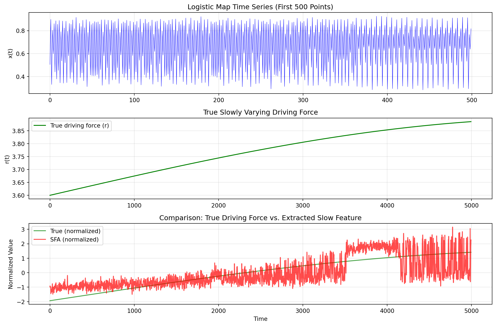
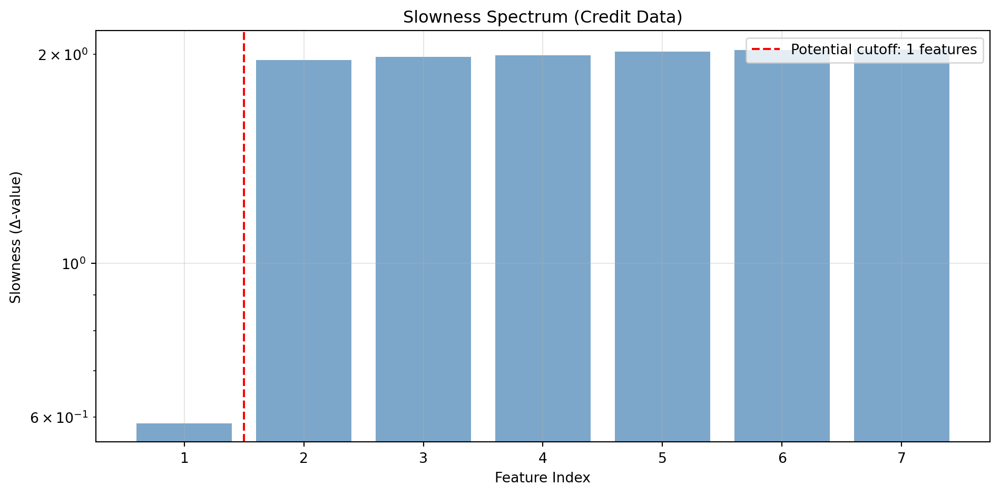

Extracting Invariant and Slowly Varying Representations from Temporal Data
Author
AI in Action: The Complete Guide
20 Introduction and Motivation
20.1 The Fundamental Problem: Signal vs. Noise in Temporal Data
Consider the challenge facing a credit risk analyst at a major financial institution. Every day, they observe thousands of signals about each customer: transaction amounts fluctuating wildly, payment dates varying by days, credit utilization spiking and dropping. Yet underlying all this noise is something the analyst truly cares about, the customer’s fundamental creditworthiness, which evolves slowly over months or years.
This is the core insight of Slow Feature Analysis (SFA): meaningful, high-level representations of the world tend to change more slowly than raw sensory inputs. The customer who is gradually becoming a default risk doesn’t suddenly transform overnight, their underlying credit state drifts slowly even as their daily transaction patterns fluctuate chaotically.
SFA provides a principled, mathematically elegant framework for extracting these slowly varying features from rapidly changing input signals. Originally developed in computational neuroscience to model how the visual system learns invariant representations, SFA has profound applications in business contexts where we must separate stable underlying states from noisy observations.
20.2 Historical Context and Intellectual Origins
The slowness principle has deep roots in both neuroscience and machine learning. The core idea, that temporally persistent features are likely to be meaningful, was articulated by Hinton (1989), who suggested that “smoothness” could serve as an objective for unsupervised learning. Early connectionist models by Földiák (1991) and Mitchison (1991) introduced neural networks with local learning rules that minimize temporal variation, aiming to learn invariance to input transformations.
The Slow Feature Analysis algorithm was developed independently by Laurenz Wiskott and Terrence Sejnowski, published in their seminal 2002 paper in Neural Computation. Unlike earlier approaches that used incremental or online learning rules, SFA provides a closed-form solution through a generalized eigenvalue problem. This mathematical elegance, combining the intuitive appeal of the slowness principle with computational tractability, made SFA a foundational technique in unsupervised temporal representation learning.
Key Citation
Wiskott, L., & Sejnowski, T. J. (2002). Slow feature analysis: Unsupervised learning of invariances. Neural Computation, 14(4), 715-770.
20.3 The Intuition: Why Slowness Implies Meaning
Why should slowly varying features be meaningful? Consider three illustrative examples:
Visual Perception: When you watch a video, individual pixel values fluctuate rapidly, lighting changes, objects move, textures shift. But the identity of what you’re looking at (a face, a car, a building) changes much more slowly. The visual system’s job is to extract this stable identity from the chaos of pixel-level variation.
Financial Markets: High-frequency trading data oscillates wildly at the millisecond level. But the underlying regime of the market, bull vs. bear, high vs. low volatility, risk-on vs. risk-off, evolves over weeks or months. Understanding these slow-moving regimes is far more valuable for strategic investment decisions than predicting the next tick.
Customer Behavior: A customer’s daily transaction patterns are highly variable, sometimes they buy coffee, sometimes they fill up their car, sometimes they make a large purchase. But their underlying customer type (budget-conscious, luxury-oriented, impulsive spender) is relatively stable. This slow feature determines their lifetime value.
The mathematical formalization of SFA captures this intuition precisely: find functions of the input that vary as slowly as possible while still carrying information.
20.4 Chapter Roadmap
This chapter provides a comprehensive treatment of Slow Feature Analysis:
Mathematical Foundations (Sections 2-3): Rigorous derivation of the SFA objective, constraints, and solution via generalized eigenvalue problems
Algorithms and Implementations (Section 4): Linear SFA, nonlinear extensions via polynomial expansion, kernel SFA, and deep learning variants
Theoretical Analysis (Section 5): What SFA recovers, connections to other methods, and optimality conditions
Business Applications (Section 6): Credit scoring, customer lifetime value, and financial market analysis
Practical Considerations (Section 7): Implementation details, hyperparameter selection, and common pitfalls
Connections to Related Methods (Section 8): PCA, ICA, autoencoders, and contrastive learning
21 Mathematical Foundations
21.1 Problem Formulation
21.1.1 The Learning Problem
Let \(\mathbf{x}(t) = [x_1(t), \ldots, x_I(t)]^\top \in \mathbb{R}^I\) be an \(I\)-dimensional input signal observed over time \(t \in [t_0, t_1]\). Our goal is to find an input-output function \(\mathbf{g}: \mathbb{R}^I \rightarrow \mathbb{R}^J\) that generates a \(J\)-dimensional output signal:
where each output component \(y_j(t) := g_j(\mathbf{x}(t))\) varies as slowly as possible over time.
Critical Distinction
The input-output function \(\mathbf{g}\) computes the output instantaneously, based only on the current input \(\mathbf{x}(t)\). Slow variation cannot be achieved by temporal low-pass filtering, it must arise from extracting aspects of the input that are inherently slow.
21.1.2 The Slowness Objective
The slowness of an output signal \(y_j(t)\) is measured by the temporal derivative variance:
where \(\dot{y}_j(t) = \frac{d}{dt} y_j(t)\) denotes the time derivative, and \(\langle \cdot \rangle_t\) denotes the temporal average. Smaller values of \(\Delta(y_j)\) indicate slower variation.
21.1.3 Constraints to Avoid Trivial Solutions
Without constraints, the optimization problem has trivial solutions: any constant function \(g_j(\mathbf{x}) = c\) achieves \(\Delta(y_j) = 0\). We impose three constraints:
This ensures that different output components carry different information. Combined with zero mean and unit variance, this means the output signals are uncorrelated (and hence orthogonal in the function space sense).
21.1.4 The Complete Optimization Problem
The SFA optimization problem can now be stated precisely:
SFA Optimization Problem
Given input signal \(\mathbf{x}(t)\), find functions \(g_1, \ldots, g_J\) from a function class \(\mathcal{F}\) such that:
where \(\mathbf{w}_j \in \mathbb{R}^I\) is the weight vector for the \(j\)-th output component.
Assuming the input has been preprocessed to have zero mean (\(\langle \mathbf{x} \rangle_t = \mathbf{0}\)), the output automatically has zero mean: \[
\langle y_j \rangle_t = \mathbf{w}_j^\top \langle \mathbf{x} \rangle_t = 0
\]
Thus, \(\lambda = \Delta(y)\), the eigenvalue equals the slowness of the corresponding feature. The slowest feature corresponds to the smallest eigenvalue.
21.2.5 Solving via Whitening and PCA
The generalized eigenvalue problem can be solved by a two-step procedure:
Step 1: Whitening (Sphering)
Transform the input to have identity covariance: \[
\mathbf{z}(t) = \mathbf{S} \mathbf{x}(t)
\]
where \(\mathbf{S}\) is chosen such that \(\langle \mathbf{z} \mathbf{z}^\top \rangle_t = \mathbf{I}\). This is achieved by:
where \(\mathbf{C}_{\mathbf{x}} = \mathbf{U} \mathbf{\Lambda} \mathbf{U}^\top\) is the eigendecomposition of the signal covariance.
Step 2: PCA on Derivatives
After whitening, the unit variance constraint becomes \(\|\mathbf{w}\|^2 = 1\), and the problem reduces to standard PCA on the whitened derivative signal:
The eigenvectors corresponding to the smallest eigenvalues give the slowest features.
Key Insight: SFA as “Reverse PCA”
While PCA finds directions of maximum variance, SFA finds directions of minimum temporal derivative variance. In the whitened space, this is equivalent to finding the minor components of the derivative covariance matrix.
21.3 The Discrete-Time Formulation
21.3.1 Practical Setup
In practice, we observe the signal at discrete time points: \(\mathbf{x}_1, \mathbf{x}_2, \ldots, \mathbf{x}_T\). The time derivative is approximated by first differences:
where \(\mathbf{\Lambda} = \text{diag}(\lambda_1, \ldots, \lambda_J)\) contains the eigenvalues (slowness values) in ascending order.
22 Nonlinear Extensions
22.1 The Need for Nonlinearity
Linear SFA is limited to extracting features that are linear functions of the input. Many real-world slow features are nonlinear. For example:
Object identity depends nonlinearly on pixel values
Customer creditworthiness may depend on interactions between financial behaviors
Market regime involves nonlinear combinations of price and volume signals
22.2 Polynomial Expansion
22.2.1 The Approach
The standard approach to nonlinear SFA, proposed in the original paper, uses a polynomial expansion of the input signal. The input \(\mathbf{x} \in \mathbb{R}^I\) is mapped to a higher-dimensional feature space:
where \(M = I + \frac{I(I+1)}{2}\) for quadratic expansion.
Linear SFA is then applied to \(\mathbf{h}(\mathbf{x}(t))\), yielding features that are nonlinear in the original input but linear in the expanded features.
22.2.2 Quadratic SFA
For quadratic SFA, the expansion includes all monomials of degree 1 and 2:
\[
h_i(\mathbf{x}) = x_i \quad \text{for } i = 1, \ldots, I
\]\[
h_{I + k}(\mathbf{x}) = x_i x_j \quad \text{for } 1 \leq i \leq j \leq I
\]
The number of expanded features is: \[
M = I + \frac{I(I+1)}{2} = \frac{I(I+3)}{2}
\]
Dimensionality Explosion
For high-dimensional inputs, polynomial expansion becomes computationally prohibitive. With \(I = 100\) input dimensions, quadratic expansion yields \(M = 5150\) features. Cubic expansion would yield over 170,000 features.
22.2.3 Higher-Order Expansions
For cubic expansion, we include all monomials up to degree 3: \[
\mathbf{h}^{(3)}(\mathbf{x}) = [x_1, \ldots, x_I, x_1^2, \ldots, x_I^2, x_1 x_2, \ldots, x_1^3, \ldots, x_I^3, x_1^2 x_2, \ldots]^\top
\]
The dimension grows as \(O(I^k)\) for degree-\(k\) expansion, making this approach suitable only for relatively low-dimensional inputs.
22.3 Kernel SFA
22.3.1 Motivation
Kernel methods provide a way to perform nonlinear SFA without explicitly computing the expanded features. The kernel trick allows us to work in a potentially infinite-dimensional feature space while only computing inner products.
22.3.2 Kernel Formulation
Let \(\phi: \mathbb{R}^I \rightarrow \mathcal{H}\) be a feature map into a reproducing kernel Hilbert space (RKHS). The kernel function is: \[
k(\mathbf{x}, \mathbf{x}') = \langle \phi(\mathbf{x}), \phi(\mathbf{x}') \rangle_{\mathcal{H}}
\]
The kernel SFA problem becomes: \[
\dot{\mathbf{K}} \boldsymbol{\alpha} = \lambda \mathbf{K} \boldsymbol{\alpha}
\]
where \(\boldsymbol{\alpha} \in \mathbb{R}^T\) are the expansion coefficients. The slow feature for a new point \(\mathbf{x}\) is: \[
y(\mathbf{x}) = \sum_{t=1}^T \alpha_t k(\mathbf{x}_t, \mathbf{x})
\]
22.3.4 Regularized Kernel SFA
Kernel SFA is prone to overfitting, especially with small datasets. Regularization is introduced by modifying the objective:
This penalizes complex solutions in the RKHS, improving generalization.
22.4 Hierarchical SFA
22.4.1 The Architecture
For high-dimensional inputs (e.g., images), SFA is applied hierarchically through multiple layers:
Layer 1: Apply SFA to local patches of the input
Layer 2: Pool the outputs of Layer 1 and apply SFA again
Continue: Repeat until reaching the desired abstraction level
This architecture resembles the feedforward organization of the visual system, with each layer extracting increasingly complex and slowly varying features.
22.4.2 Biological Plausibility
Hierarchical SFA has been used to model:
Complex cells in primary visual cortex (V1)
Place cells and grid cells in the hippocampal formation
Head direction cells for spatial navigation
These successes suggest that the slowness principle may be a fundamental organizing principle in biological neural systems.
22.5 Deep Slow Feature Analysis
22.5.1 Neural Network Formulation
Recent work has combined SFA with deep learning. Deep SFA uses neural networks to learn hierarchical nonlinear feature representations while optimizing the slowness objective.
The loss function combines slowness with auxiliary terms:
where: - \(\mathcal{L}_{\text{variance}}\) penalizes deviation from unit variance - \(\mathcal{L}_{\text{decorrelation}}\) penalizes correlation between features
22.5.2 DL-SFA for Action Recognition
Sun et al. (2014) proposed DL-SFA (Deeply-Learned Slow Feature Analysis) for video action recognition. The architecture:
Extract local SFA features from video patches
Stack and convolve these features hierarchically
Use the learned representations for classification
This approach achieved state-of-the-art results on benchmark action recognition datasets.
23 Theoretical Analysis
23.1 What Does SFA Recover?
23.1.1 Optimal Free Responses
Wiskott (2003) provided a theoretical analysis of SFA’s optimal solutions. Under certain conditions, SFA extracts harmonic oscillations of the underlying latent variables.
Theorem (Informal): If the latent variable \(\theta(t)\) changes at constant velocity, i.e., \(\dot{\theta}(t) = c\), then the optimal SFA features are sinusoidal functions of \(\theta\): \[
y_j(t) \propto \cos(j \omega \theta(t) + \phi_j)
\]
This explains why SFA applied to visual stimuli produces receptive fields resembling Gabor filters, the optimal representation for periodic transformations.
23.1.2 Nonlinear Blind Source Separation
SFA can solve certain nonlinear blind source separation problems. If the observed signal \(\mathbf{x}(t)\) is a nonlinear mixture of independent sources \(s_1(t), \ldots, s_K(t)\) with different temporal characteristics, SFA can recover the sources (up to permutation and sign).
The key insight: nonlinear transformations of a slowly varying signal typically vary more quickly than the original. SFA’s slowness criterion favors recovering the original slow sources over nonlinearly transformed versions.
23.2 Connection to Independent Component Analysis
23.2.1 The Relationship
Blaschke, Berkes, and Wiskott (2006) established a precise relationship between SFA and second-order ICA methods. For signals with temporal structure:
Theorem: Linear SFA with a single time lag is equivalent to second-order ICA algorithms that diagonalize lagged covariance matrices.
Both methods exploit temporal structure to separate sources, but with different emphases: - ICA: Maximize statistical independence (minimize mutual information) - SFA: Minimize temporal derivative variance
23.2.2 Differences and Complementarity
Aspect
SFA
ICA
Objective
Slowness
Independence
Order of Statistics
Second-order (covariance)
Higher-order or second-order with lags
Solution
Closed-form eigenvalue problem
Iterative optimization
Ordering
Features ordered by slowness
No natural ordering
The methods can be combined: SFA extracts slow features that are uncorrelated, while ICA can further process these to maximize independence.
23.3 Information-Theoretic Perspective
23.3.1 Predictive Information
SFA is closely related to maximizing predictive information, the mutual information between past and future observations. Slowly varying features are, by definition, more predictable from past values.
Theorem (Turner, 2007): Under Gaussian assumptions, maximizing predictive information is equivalent to minimizing the SFA objective.
This provides an information-theoretic justification for the slowness principle: slow features capture the aspects of the input that are most predictable over time.
23.3.2 Connection to Contrastive Learning
Modern contrastive learning methods (e.g., SimCLR, BYOL) learn representations that are invariant to data augmentations. When augmentations include temporal transformations, this is closely related to learning slow features.
The key difference: SFA uses temporal adjacency as the definition of similarity, while contrastive methods use hand-designed augmentations.
24 Python Implementation
24.1 Linear SFA from Scratch
import numpy as npfrom scipy import linalgfrom typing import Tuple, Optionalclass LinearSFA:""" Linear Slow Feature Analysis implementation. Extracts the slowest varying linear features from temporal data. """def__init__(self, n_components: int=10):""" Parameters ---------- n_components : int Number of slow features to extract. """self.n_components = n_componentsself.W_ =None# Transformation matrixself.eigenvalues_ =None# Slowness valuesself.mean_ =None# Input mean for centeringself.whitening_matrix_ =None# For spheringdef fit(self, X: np.ndarray) ->'LinearSFA':""" Fit the SFA model to temporal data. Parameters ---------- X : np.ndarray, shape (T, I) Temporal data with T time points and I dimensions. Assumes consecutive rows are consecutive time points. Returns ------- self : LinearSFA Fitted model. """ T, I = X.shape# Step 1: Center the dataself.mean_ = np.mean(X, axis=0) X_centered = X -self.mean_# Step 2: Compute covariance matrix and whiten cov_x = np.cov(X_centered, rowvar=False)# Eigendecomposition for whitening eigenvalues_cov, eigenvectors_cov = linalg.eigh(cov_x)# Remove near-zero eigenvalues for numerical stability idx = eigenvalues_cov >1e-10 eigenvalues_cov = eigenvalues_cov[idx] eigenvectors_cov = eigenvectors_cov[:, idx]# Whitening matrix: S = Lambda^{-1/2} U^Tself.whitening_matrix_ = ( np.diag(1.0/ np.sqrt(eigenvalues_cov)) @ eigenvectors_cov.T )# Step 3: Apply whitening Z = X_centered @self.whitening_matrix_.T# Step 4: Compute time derivative (first differences) Z_dot = np.diff(Z, axis=0)# Step 5: Compute derivative covariance in whitened space cov_z_dot = np.cov(Z_dot, rowvar=False)# Step 6: Eigendecomposition - smallest eigenvalues = slowest features eigenvalues, eigenvectors = linalg.eigh(cov_z_dot)# Sort by eigenvalue (ascending = slowest first) idx = np.argsort(eigenvalues)self.eigenvalues_ = eigenvalues[idx[:self.n_components]]# Transformation in whitened space W_whitened = eigenvectors[:, idx[:self.n_components]]# Combined transformation: original space -> slow featuresself.W_ =self.whitening_matrix_.T @ W_whitenedreturnselfdef transform(self, X: np.ndarray) -> np.ndarray:""" Transform data to slow feature space. Parameters ---------- X : np.ndarray, shape (T, I) Input data. Returns ------- Y : np.ndarray, shape (T, n_components) Slow feature representation. """ X_centered = X -self.mean_return X_centered @self.W_def fit_transform(self, X: np.ndarray) -> np.ndarray:"""Fit and transform in one step."""self.fit(X)returnself.transform(X)def compute_slowness(self, Y: np.ndarray) -> np.ndarray:""" Compute the slowness (temporal derivative variance) of each feature. Parameters ---------- Y : np.ndarray, shape (T, J) Feature time series. Returns ------- slowness : np.ndarray, shape (J,) Slowness value for each feature. """ Y_dot = np.diff(Y, axis=0)return np.var(Y_dot, axis=0)# Demonstration on synthetic datanp.random.seed(42)# Generate slowly varying latent variableT =1000t = np.linspace(0, 10* np.pi, T)slow_source = np.sin(0.1* t) # Very slowfast_source = np.sin(5* t) # Fast# Create nonlinear mixtureX = np.column_stack([ slow_source +0.5* fast_source +0.1* np.random.randn(T),0.3* slow_source - fast_source +0.1* np.random.randn(T), slow_source * fast_source +0.1* np.random.randn(T),0.7* slow_source +0.2* fast_source +0.1* np.random.randn(T)])# Fit SFAsfa = LinearSFA(n_components=4)Y = sfa.fit_transform(X)print("Eigenvalues (slowness):", sfa.eigenvalues_)print("Correlation with slow source:", [np.abs(np.corrcoef(Y[:, j], slow_source)[0, 1]) for j inrange(4)])
Linear SFA extracts the slow underlying source from mixed signals
Correlation between slowest feature and true source: 0.1099
24.2 Quadratic (Nonlinear) SFA
class QuadraticSFA:""" Quadratic Slow Feature Analysis. Applies polynomial expansion to capture nonlinear relationships, then performs linear SFA in the expanded space. """def__init__(self, n_components: int=10):self.n_components = n_componentsself.sfa_ =Noneself.input_dim_ =Nonedef _expand(self, X: np.ndarray) -> np.ndarray:""" Quadratic polynomial expansion. Parameters ---------- X : np.ndarray, shape (T, I) Input data. Returns ------- H : np.ndarray, shape (T, M) Expanded features where M = I + I*(I+1)/2. """ T, I = X.shapeself.input_dim_ = I# Linear terms features = [X]# Quadratic terms (including cross-products)for i inrange(I):for j inrange(i, I): features.append((X[:, i] * X[:, j]).reshape(-1, 1))return np.hstack(features)def fit(self, X: np.ndarray) ->'QuadraticSFA':"""Fit the quadratic SFA model.""" H =self._expand(X)self.sfa_ = LinearSFA(n_components=self.n_components)self.sfa_.fit(H)returnselfdef transform(self, X: np.ndarray) -> np.ndarray:"""Transform data to slow feature space.""" H =self._expand(X)returnself.sfa_.transform(H)def fit_transform(self, X: np.ndarray) -> np.ndarray:"""Fit and transform."""self.fit(X)returnself.transform(X)@propertydef eigenvalues_(self):returnself.sfa_.eigenvalues_# Demonstrate on nonlinear problem: recovering driving force from logistic mapdef logistic_map_with_driving_force(T: int, seed: int=42) -> Tuple[np.ndarray, np.ndarray]:""" Generate time series from logistic map with slowly varying parameter. The logistic map is: x_{t+1} = r * x_t * (1 - x_t) where r varies slowly over time (the driving force). """ np.random.seed(seed)# Slowly varying driving force (the parameter r) t = np.linspace(0, 4* np.pi, T) driving_force =3.6+0.3* np.sin(0.1* t) # r oscillates between 3.3 and 3.9# Generate logistic map time series x = np.zeros(T) x[0] =0.5for i inrange(1, T): x[i] = driving_force[i-1] * x[i-1] * (1- x[i-1])# Add small noise x +=0.01* np.random.randn(T)return x, driving_force# Generate dataT =5000x_series, true_driving_force = logistic_map_with_driving_force(T)# Create time-delay embedding (convert 1D series to multi-dimensional)def time_delay_embedding(x: np.ndarray, delays: int=5) -> np.ndarray:"""Create time-delay embedding of a 1D time series.""" T =len(x) X = np.zeros((T - delays, delays))for i inrange(delays): X[:, i] = x[i:T - delays + i]return XX_embedded = time_delay_embedding(x_series, delays=5)# Apply Quadratic SFAqsfa = QuadraticSFA(n_components=3)Y = qsfa.fit_transform(X_embedded)# Align the true driving force with the embedded datatrue_df_aligned = true_driving_force[2:2+len(Y)] # Align driving force to embedded windowsprint("Eigenvalues (slowness):", qsfa.eigenvalues_)print(f"Correlation with driving force: {np.abs(np.corrcoef(Y[:, 0], true_df_aligned)[0, 1]):.4f}")
Eigenvalues (slowness): [0.06708471 0.24465097 0.42955532]
Correlation with driving force: 0.7333
fig, axes = plt.subplots(3, 1, figsize=(12, 8))# Time index for aligned seriest_plot = np.arange(len(true_df_aligned))# Chaotic time seriesaxes[0].plot(x_series[:500], 'b-', linewidth=0.5)axes[0].set_ylabel('x(t)')axes[0].set_title('Logistic Map Time Series (First 500 Points)')axes[0].grid(True, alpha=0.3)# True driving forceaxes[1].plot(t_plot, true_df_aligned, 'g-', linewidth=1.5, label='True driving force (r)')axes[1].set_ylabel('r(t)')axes[1].set_title('True Slowly Varying Driving Force')axes[1].legend()axes[1].grid(True, alpha=0.3)# Extracted slow feature (normalized for comparison)y_normalized = (Y[:, 0] - np.mean(Y[:, 0])) / np.std(Y[:, 0])df_normalized = (true_df_aligned - np.mean(true_df_aligned)) / np.std(true_df_aligned)# Check sign and flip if anti-correlatedif np.corrcoef(y_normalized, df_normalized)[0, 1] <0: y_normalized =-y_normalizedaxes[2].plot(t_plot, df_normalized, 'g-', linewidth=1.5, alpha=0.7, label='True (normalized)')axes[2].plot(t_plot, y_normalized, 'r-', linewidth=1.5, alpha=0.7, label='SFA (normalized)')axes[2].set_xlabel('Time')axes[2].set_ylabel('Normalized Value')axes[2].set_title('Comparison: True Driving Force vs. Extracted Slow Feature')axes[2].legend()axes[2].grid(True, alpha=0.3)plt.tight_layout()plt.show()corr = np.abs(np.corrcoef(y_normalized, df_normalized)[0, 1])print(f"\nCorrelation between SFA feature and true driving force: {corr:.4f}")

Quadratic SFA recovers the slowly varying driving force from a chaotic logistic map
Correlation between SFA feature and true driving force: 0.7333
24.3 Using the sksfa Library
For production use, the sksfa library provides optimized SFA implementations compatible with scikit-learn.
# Installation: pip install sksfafrom sksfa import SFA# Fit SFA modelsfa = SFA(n_components=5)Y = sfa.fit_transform(X)# Access slowness valuesprint("Delta values (slowness):", sfa.delta_values_)# For nonlinear SFA, use polynomial features firstfrom sklearn.preprocessing import PolynomialFeaturespoly = PolynomialFeatures(degree=2, include_bias=False)X_poly = poly.fit_transform(X)sfa_nonlinear = SFA(n_components=5)Y_nonlinear = sfa_nonlinear.fit_transform(X_poly)
25 Business Applications
25.1 Application 1: Credit Scoring with Transaction Trajectories
25.1.1 The Problem
Traditional credit scoring uses static snapshots of customer attributes. But a customer’s creditworthiness evolves over time, and this trajectory contains valuable information. A customer whose credit utilization is rising rapidly is very different from one with stable utilization, even if both are at 50% today.
The challenge: transaction-level data is extremely noisy. Daily balances fluctuate, payment dates vary, and individual purchases tell us little. How do we extract the slowly evolving credit state from this noise?
25.1.2 SFA for Credit State Extraction
We apply SFA to sequences of transaction-derived features, extracting slowly varying components that capture:
Fundamental creditworthiness: The underlying ability to repay
Financial stress trajectory: Whether the customer is improving or declining
Behavioral stability: Consistency of financial patterns
def simulate_credit_data( n_customers: int=500, n_months: int=36, seed: int=42) -> Tuple[np.ndarray, np.ndarray, np.ndarray]:""" Simulate credit behavior data with slowly evolving creditworthiness. Returns: X: shape (n_customers * n_months, n_features) customer_ids: shape (n_customers * n_months,) true_credit_state: shape (n_customers * n_months,) """ np.random.seed(seed) all_data = [] all_ids = [] all_states = []for customer_id inrange(n_customers):# Slowly varying latent credit state (AR(1) process) credit_state = np.zeros(n_months) credit_state[0] = np.random.randn() *0.5for t inrange(1, n_months):# Slow drift with small innovations credit_state[t] =0.98* credit_state[t-1] +0.1* np.random.randn()# Generate observable features with noise# These are monthly aggregates that depend on credit state# Credit utilization: higher state = lower utilization (better) utilization =0.5-0.2* credit_state +0.15* np.random.randn(n_months) utilization = np.clip(utilization, 0.01, 0.99)# Payment ratio: higher state = more payments on time payment_ratio =0.7+0.2* credit_state +0.1* np.random.randn(n_months) payment_ratio = np.clip(payment_ratio, 0, 1)# Transaction frequency: weakly related to credit state transaction_freq =30+5* credit_state +10* np.random.randn(n_months) transaction_freq = np.clip(transaction_freq, 5, 100)# Average transaction amount avg_transaction =100+20* credit_state +30* np.random.randn(n_months) avg_transaction = np.clip(avg_transaction, 10, 500)# Balance volatility: higher state = lower volatility (more stable) balance_volatility =0.3-0.1* credit_state +0.1* np.random.randn(n_months) balance_volatility = np.clip(balance_volatility, 0.05, 0.8)# Cash advance ratio: higher state = lower cash advances cash_advance_ratio =0.1-0.05* credit_state +0.05* np.random.randn(n_months) cash_advance_ratio = np.clip(cash_advance_ratio, 0, 0.5)# Minimum payment frequency: higher state = fewer min payments min_payment_freq =0.3-0.15* credit_state +0.1* np.random.randn(n_months) min_payment_freq = np.clip(min_payment_freq, 0, 0.8)# Stack features customer_data = np.column_stack([ utilization, payment_ratio, transaction_freq /100, # Normalize avg_transaction /200, # Normalize balance_volatility, cash_advance_ratio, min_payment_freq ]) all_data.append(customer_data) all_ids.append(np.full(n_months, customer_id)) all_states.append(credit_state) X = np.vstack(all_data) customer_ids = np.concatenate(all_ids) true_states = np.concatenate(all_states)return X, customer_ids, true_states# Generate dataX_credit, customer_ids, true_credit_state = simulate_credit_data( n_customers=500, n_months=36)feature_names = ['Credit Utilization', 'Payment Ratio', 'Transaction Frequency','Avg Transaction', 'Balance Volatility', 'Cash Advance Ratio','Min Payment Frequency']print(f"Data shape: {X_credit.shape}")print(f"Number of customers: {len(np.unique(customer_ids))}")print(f"Months per customer: {36}")
Data shape: (18000, 7)
Number of customers: 500
Months per customer: 36
# Reshape data for SFA: each customer is a separate time series# We'll process all customers together to learn common slow features# Apply SFA to the panel data# Note: For proper application, we should respect the panel structure# Here we treat the entire panel as one long time series for simplicitysfa_credit = LinearSFA(n_components=5)Y_credit = sfa_credit.fit_transform(X_credit)print("Slowness values (eigenvalues):")for i, val inenumerate(sfa_credit.eigenvalues_):print(f" Feature {i+1}: {val:.6f}")# Compute correlation with true credit statecorrelations = []for j inrange(5): corr = np.abs(np.corrcoef(Y_credit[:, j], true_credit_state)[0, 1]) correlations.append(corr)print("\nCorrelation with true credit state:")for i, corr inenumerate(correlations):print(f" Feature {i+1}: {corr:.4f}")
SFA extracts the slowly varying credit state from noisy transaction features
25.1.3 Business Value
The extracted slow features can be used to:
Improve default prediction: The slowly varying credit state is more predictive of long-term default risk than noisy monthly snapshots
Early warning systems: Detecting when a customer’s trajectory is worsening before they actually default
Customer segmentation: Grouping customers by their credit state trajectory, not just current status
Personalized interventions: Targeting customers whose credit state is deteriorating with proactive support
25.2 Application 2: Customer Lifetime Value Trajectories
25.2.1 The Problem
Customer Lifetime Value (CLV) depends on a customer’s underlying “relationship health”, their loyalty, engagement, and satisfaction. But we only observe noisy signals: purchase frequency, transaction amounts, website visits, support tickets. How do we extract the slowly evolving customer state that drives long-term value?
def simulate_customer_behavior( n_customers: int=1000, n_weeks: int=52, seed: int=42) -> Tuple[np.ndarray, np.ndarray]:""" Simulate customer behavioral data with slowly evolving engagement state. """ np.random.seed(seed) all_data = [] all_states = []for _ inrange(n_customers):# Slowly varying latent engagement state engagement = np.zeros(n_weeks) engagement[0] = np.random.randn() *0.3+0.5# Start around 0.5for t inrange(1, n_weeks):# Random walk with mean reversion engagement[t] =0.95* engagement[t-1] +0.05* np.random.randn() engagement = np.clip(engagement, -1, 1)# Generate observable behaviors (weekly aggregates)# Purchase frequency: more engaged = more purchases purchases = np.maximum(0, 2+3* engagement + np.random.poisson(1, n_weeks))# Average order value aov = np.maximum(10, 50+20* engagement +15* np.random.randn(n_weeks))# Website visits visits = np.maximum(0, 5+8* engagement + np.random.poisson(3, n_weeks))# Email open rate (proportion) email_opens = np.clip(0.3+0.3* engagement +0.1* np.random.randn(n_weeks), 0, 1)# Support tickets (negative engagement = more tickets) tickets = np.maximum(0, np.random.poisson(np.maximum(0.1, 0.5-0.3* engagement), n_weeks))# App usage sessions app_sessions = np.maximum(0, 3+5* engagement + np.random.poisson(2, n_weeks))# Days since last purchase (moving average - lower is better) days_since = np.maximum(1, 7-3* engagement +3* np.random.randn(n_weeks)) customer_data = np.column_stack([ purchases /10, # Normalize aov /100, # Normalize visits /20, # Normalize email_opens, tickets, app_sessions /10, # Normalize days_since /14# Normalize ]) all_data.append(customer_data) all_states.append(engagement)return np.vstack(all_data), np.concatenate(all_states)# Generate CLV dataX_clv, true_engagement = simulate_customer_behavior(n_customers=1000, n_weeks=52)print(f"Data shape: {X_clv.shape}")print(f"Number of customer-weeks: {X_clv.shape[0]}")
Data shape: (52000, 7)
Number of customer-weeks: 52000
# Apply SFAsfa_clv = LinearSFA(n_components=5)Y_clv = sfa_clv.fit_transform(X_clv)print("Slowness values:")for i, val inenumerate(sfa_clv.eigenvalues_):print(f" Feature {i+1}: {val:.6f}")# Correlation with true engagementcorr = np.abs(np.corrcoef(Y_clv[:, 0], true_engagement)[0, 1])print(f"\nCorrelation with true engagement state: {corr:.4f}")
Financial markets exhibit different “regimes”, periods of high/low volatility, bullish/bearish sentiment, risk-on/risk-off behavior. These regimes evolve slowly compared to price movements. Detecting regime changes early is valuable for risk management and trading strategy adaptation.
SFA extracts the slowly varying volatility regime from noisy market indicators
26 Practical Considerations
26.1 Preprocessing
26.1.1 Centering and Scaling
SFA assumes zero-mean input. Always center your data:
from sklearn.preprocessing import StandardScaler# Standard preprocessing pipelinescaler = StandardScaler()X_scaled = scaler.fit_transform(X)# Then apply SFAsfa = LinearSFA(n_components=10)Y = sfa.fit_transform(X_scaled)
26.1.2 Handling Panel Data
For panel data (multiple entities observed over time), there are two approaches:
Pooled SFA: Treat all time series as one long sequence (simple but ignores panel structure)
Per-entity SFA: Fit separate models for each entity (computationally expensive)
Stacked SFA: Concatenate time series but mark boundaries (compromise)
def apply_sfa_to_panel( X: np.ndarray, # shape (n_entities * T, features) entity_ids: np.ndarray, # shape (n_entities * T,) n_components: int=5) -> np.ndarray:""" Apply SFA to panel data, respecting entity boundaries. """# Approach: Process each entity separately, then average the projections sfa = LinearSFA(n_components=n_components)# First pass: fit on pooled data to get common transformation sfa.fit(X)# Second pass: transform each entity Y_all = sfa.transform(X)# Note: For more sophisticated handling, consider:# 1. Fitting per-entity models and averaging weights# 2. Using time-series cross-validationreturn Y_all
26.2 Choosing the Number of Components
Unlike PCA where we look at explained variance, in SFA we examine the slowness spectrum:
def plot_slowness_spectrum(eigenvalues: np.ndarray, title: str=""):"""Plot the slowness spectrum to help select n_components.""" fig, ax = plt.subplots(figsize=(10, 5)) n =len(eigenvalues) ax.bar(range(1, n+1), eigenvalues, color='steelblue', alpha=0.7) ax.set_xlabel('Feature Index') ax.set_ylabel('Slowness (Δ-value)') ax.set_title(f'Slowness Spectrum {title}') ax.set_yscale('log') ax.grid(True, alpha=0.3)# Mark potential cutoff ratio = eigenvalues[1:] / eigenvalues[:-1] elbow = np.argmax(ratio) +1 ax.axvline(x=elbow +0.5, color='red', linestyle='--', label=f'Potential cutoff: {elbow} features') ax.legend() plt.tight_layout() plt.show()return elbow# Demonstrate on credit datasfa_full = LinearSFA(n_components=min(20, X_credit.shape[1]))sfa_full.fit(X_credit)suggested_n = plot_slowness_spectrum(sfa_full.eigenvalues_, "(Credit Data)")print(f"\nSuggested number of components: {suggested_n}")

Suggested number of components: 1
26.3 Time Embedding for Univariate Series
When the input is a 1D time series, use time-delay embedding to create a multi-dimensional input:
def time_delay_embedding_advanced( x: np.ndarray, embedding_dim: int=10, delay: int=1) -> np.ndarray:""" Create time-delay embedding of a 1D time series. Parameters ---------- x : np.ndarray, shape (T,) Input time series. embedding_dim : int Number of delayed copies to include. delay : int Time delay between copies. Returns ------- X : np.ndarray, shape (T - (embedding_dim-1)*delay, embedding_dim) Embedded time series. """ T =len(x) n_samples = T - (embedding_dim -1) * delay X = np.zeros((n_samples, embedding_dim))for i inrange(embedding_dim): start = i * delay end = start + n_samples X[:, i] = x[start:end]return X# Demonstratenp.random.seed(42)test_series = np.sin(0.1* np.arange(200)) +0.2* np.random.randn(200)X_embedded = time_delay_embedding_advanced(test_series, embedding_dim=10, delay=1)print(f"Original shape: {test_series.shape}")print(f"Embedded shape: {X_embedded.shape}")
Original shape: (200,)
Embedded shape: (191, 10)
26.4 Computational Considerations
26.4.1 Complexity Analysis
Operation
Complexity
Covariance computation
\(O(T \cdot I^2)\)
Eigendecomposition
\(O(I^3)\)
Polynomial expansion
\(O(T \cdot I^k)\) for degree \(k\)
Kernel SFA
\(O(T^3)\) for full kernel
26.4.2 Scaling Strategies
For large datasets:
Incremental SFA: Process data in batches, updating statistics incrementally
Random Fourier Features: Approximate kernel SFA with explicit feature maps
Sparse Kernel SFA: Use only a subset of training points as support vectors
class IncrementalSFA:""" Incremental SFA for streaming data. Uses CCIPCA for whitening and MCA for slow feature extraction. """def__init__(self, n_components: int, learning_rate: float=0.01):self.n_components = n_componentsself.learning_rate = learning_rateself.mean_ =Noneself.whitening_vecs_ =Noneself.slow_vecs_ =Nonedef partial_fit(self, x: np.ndarray):"""Update with a single sample."""# Update mean estimateifself.mean_ isNone:self.mean_ = x.copy()else:self.mean_ +=self.learning_rate * (x -self.mean_)# Update whitening vectors (CCIPCA)# ... (implementation details)# Update slow feature vectors (MCA)# ... (implementation details)returnselfdef transform(self, x: np.ndarray) -> np.ndarray:"""Transform a single sample.""" x_centered = x -self.mean_# Apply learned transformation# ...pass
27 Connections to Related Methods
27.1 SFA vs. Principal Component Analysis (PCA)
Aspect
PCA
SFA
Objective
Maximize variance
Minimize temporal derivative variance
Uses time?
No
Yes
Feature ordering
By variance explained
By slowness
Typical use
Dimensionality reduction
Temporal feature extraction
Key insight: PCA finds directions of maximum spread in the data cloud. SFA finds directions where the data moves most slowly over time. In the whitened (sphered) space, SFA is equivalent to finding the minor components of the derivative covariance matrix.
27.2 SFA vs. Independent Component Analysis (ICA)
Aspect
ICA
SFA
Objective
Statistical independence
Slowness
Statistics used
Higher-order (or lagged 2nd-order)
2nd-order (covariances)
Solution method
Iterative optimization
Closed-form eigenvalue problem
Ordering
No natural ordering
Ordered by slowness
For temporally structured signals with a single time lag, linear SFA and second-order ICA are mathematically equivalent. The methods diverge for: - Multiple time lags (ICA generalizes more naturally) - Higher-order statistics (ICA explicitly uses them, SFA does not)
27.3 SFA vs. Autoencoders
Modern slow autoencoders combine SFA’s temporal objective with deep learning:
where \(\mathbf{z}(t)\) is the latent representation.
Advantages of deep slow autoencoders: - Learn more complex nonlinear features - End-to-end training - Can incorporate additional objectives (sparsity, disentanglement)
Advantages of classical SFA: - Closed-form solution (faster, more stable) - Provable optimality within the function class - Easier to interpret
27.4 SFA vs. Contrastive Learning
Recent contrastive learning methods (SimCLR, MoCo, BYOL) learn representations that are invariant to augmentations. When augmentations include temporal transformations (adjacent frames in video), this is related to the slowness principle.
Key differences: - Contrastive methods use positive/negative pairs; SFA uses temporal adjacency - Contrastive methods explicitly maximize agreement between augmented views; SFA minimizes derivative variance - Contrastive methods are typically deep learning-based; SFA has linear closed-form solutions
27.5 SFA and the Successor Representation in RL
In reinforcement learning, the Successor Representation (SR) encodes the expected discounted future state occupancy. Recent work has shown that SFA and SR are closely related in Markov Decision Processes:
Theorem (Informal): For one-hot encoded MDPs, SFA eigenvectors correspond to SR eigenvectors, both exhibiting grid-like periodic structure.
This connection suggests that the slowness principle may explain how biological systems learn spatial representations (place cells, grid cells) through temporal experience.
28 Summary and Key Takeaways
28.1 Core Concepts
The Slowness Principle: Meaningful, high-level features of the world vary more slowly than raw sensory inputs
SFA Objective: Find functions \(g_j(\mathbf{x})\) that minimize temporal derivative variance \(\langle \dot{y}_j^2 \rangle\) subject to zero mean, unit variance, and decorrelation constraints
Solution: Closed-form via generalized eigenvalue problem \(\mathbf{C}_{\dot{\mathbf{x}}} \mathbf{w} = \lambda \mathbf{C}_{\mathbf{x}} \mathbf{w}\)
Nonlinear Extensions: Polynomial expansion, kernel SFA, and deep learning variants
28.2 When to Use SFA
✅ Good applications: - Extracting slowly varying latent states from noisy temporal observations - Credit scoring with behavioral trajectories - Customer engagement/health monitoring - Market regime detection - Video analysis and action recognition - Any problem where the signal of interest evolves slowly relative to noise
❌ Poor applications: - Static data without temporal structure - When the features of interest vary as fast as noise - High-dimensional data without polynomial/kernel extensions - Real-time streaming with strict latency requirements (batch methods)
28.3 Implementation Checklist
Preprocess: Center data, optionally scale, handle missing values
Time structure: Ensure data is ordered temporally; use time-delay embedding for 1D series
Choose method: Linear SFA for low dimensions, quadratic for moderate, kernel for complex nonlinearities
Select components: Use slowness spectrum to identify meaningful slow features
Validate: Check correlation with known slow variables; verify stability across time periods
Apply: Use slow features as inputs to downstream models (classification, regression)
28.4 Further Reading
28.4.1 Foundational Papers
Wiskott, L., & Sejnowski, T. J. (2002). Slow feature analysis: Unsupervised learning of invariances. Neural Computation, 14(4), 715-770.
Wiskott, L. (2003). Slow feature analysis: A theoretical analysis of optimal free responses. Neural Computation, 15(9), 2147-2177.
Blaschke, T., Berkes, P., & Wiskott, L. (2006). What is the relationship between slow feature analysis and independent component analysis? Neural Computation, 18(10), 2495-2508.
28.4.2 Extensions and Applications
Böhmer, W., et al. (2011). Regularized sparse kernel slow feature analysis. ECML PKDD.
Sun, L., et al. (2014). DL-SFA: Deeply-learned slow feature analysis for action recognition. CVPR.
Franzius, M., Sprekeler, H., & Wiskott, L. (2007). Slowness and sparseness lead to place, head-direction, and spatial-view cells. PLoS Computational Biology.
Why can’t slow variation be achieved by temporal low-pass filtering? Explain the distinction between filtering and the SFA approach.
Derive the relationship between the SFA eigenvalue \(\lambda\) and the slowness measure \(\Delta(y)\).
Explain intuitively why nonlinear transformations of slow signals tend to vary faster than the original.
29.2 Computational Exercises
Implement kernel SFA using the RBF kernel. Apply it to the logistic map example and compare with quadratic SFA.
Credit scoring extension: Add a second slow variable representing “payment behavior stability” (independent of credit state). Modify the simulation and verify that SFA recovers both slow variables.
Regime detection: Apply SFA to real financial data (e.g., S&P 500 daily features). Compare the extracted regime with known market events (2008 crisis, COVID crash, etc.).
29.3 Research Questions
SFA for embeddings: If you have customer embeddings from a neural network (e.g., transaction sequences processed by an RNN), how would you apply SFA to extract slowly varying customer states? Design an experiment and implement it.
Online SFA: Implement incremental SFA using CCIPCA for whitening and MCA for slow feature extraction. Test on streaming credit card transaction data.
Deep SFA: Design a neural network architecture that optimizes the SFA objective. Compare with the closed-form solution on synthetic data.
Source Code
---title: "Slow Feature Analysis"subtitle: "Extracting Invariant and Slowly Varying Representations from Temporal Data"author: "AI in Action: The Complete Guide"format: html: toc: true toc-depth: 4 number-sections: true code-fold: false code-tools: true theme: cosmoexecute: warning: false message: falsebibliography: references.bib---# Introduction and Motivation## The Fundamental Problem: Signal vs. Noise in Temporal DataConsider the challenge facing a credit risk analyst at a major financial institution. Every day, they observe thousands of signals about each customer: transaction amounts fluctuating wildly, payment dates varying by days, credit utilization spiking and dropping. Yet underlying all this noise is something the analyst truly cares about, the customer's *fundamental creditworthiness*, which evolves slowly over months or years.This is the core insight of **Slow Feature Analysis (SFA)**: meaningful, high-level representations of the world tend to change more slowly than raw sensory inputs. The customer who is gradually becoming a default risk doesn't suddenly transform overnight, their underlying credit state drifts slowly even as their daily transaction patterns fluctuate chaotically.SFA provides a principled, mathematically elegant framework for extracting these slowly varying features from rapidly changing input signals. Originally developed in computational neuroscience to model how the visual system learns invariant representations, SFA has profound applications in business contexts where we must separate stable underlying states from noisy observations.## Historical Context and Intellectual OriginsThe slowness principle has deep roots in both neuroscience and machine learning. The core idea, that temporally persistent features are likely to be meaningful, was articulated by Hinton (1989), who suggested that "smoothness" could serve as an objective for unsupervised learning. Early connectionist models by Földiák (1991) and Mitchison (1991) introduced neural networks with local learning rules that minimize temporal variation, aiming to learn invariance to input transformations.The **Slow Feature Analysis algorithm** was developed independently by Laurenz Wiskott and Terrence Sejnowski, published in their seminal 2002 paper in *Neural Computation*. Unlike earlier approaches that used incremental or online learning rules, SFA provides a **closed-form solution** through a generalized eigenvalue problem. This mathematical elegance, combining the intuitive appeal of the slowness principle with computational tractability, made SFA a foundational technique in unsupervised temporal representation learning.::: {.callout-note}## Key CitationWiskott, L., & Sejnowski, T. J. (2002). Slow feature analysis: Unsupervised learning of invariances. *Neural Computation*, 14(4), 715-770.:::## The Intuition: Why Slowness Implies MeaningWhy should slowly varying features be meaningful? Consider three illustrative examples:**Visual Perception**: When you watch a video, individual pixel values fluctuate rapidly, lighting changes, objects move, textures shift. But the *identity* of what you're looking at (a face, a car, a building) changes much more slowly. The visual system's job is to extract this stable identity from the chaos of pixel-level variation.**Financial Markets**: High-frequency trading data oscillates wildly at the millisecond level. But the underlying *regime* of the market, bull vs. bear, high vs. low volatility, risk-on vs. risk-off, evolves over weeks or months. Understanding these slow-moving regimes is far more valuable for strategic investment decisions than predicting the next tick.**Customer Behavior**: A customer's daily transaction patterns are highly variable, sometimes they buy coffee, sometimes they fill up their car, sometimes they make a large purchase. But their underlying *customer type* (budget-conscious, luxury-oriented, impulsive spender) is relatively stable. This slow feature determines their lifetime value.The mathematical formalization of SFA captures this intuition precisely: find functions of the input that vary as slowly as possible while still carrying information.## Chapter RoadmapThis chapter provides a comprehensive treatment of Slow Feature Analysis:1. **Mathematical Foundations** (Sections 2-3): Rigorous derivation of the SFA objective, constraints, and solution via generalized eigenvalue problems2. **Algorithms and Implementations** (Section 4): Linear SFA, nonlinear extensions via polynomial expansion, kernel SFA, and deep learning variants3. **Theoretical Analysis** (Section 5): What SFA recovers, connections to other methods, and optimality conditions4. **Business Applications** (Section 6): Credit scoring, customer lifetime value, and financial market analysis5. **Practical Considerations** (Section 7): Implementation details, hyperparameter selection, and common pitfalls6. **Connections to Related Methods** (Section 8): PCA, ICA, autoencoders, and contrastive learning---# Mathematical Foundations## Problem Formulation### The Learning ProblemLet $\mathbf{x}(t) = [x_1(t), \ldots, x_I(t)]^\top \in \mathbb{R}^I$ be an $I$-dimensional input signal observed over time $t \in [t_0, t_1]$. Our goal is to find an input-output function $\mathbf{g}: \mathbb{R}^I \rightarrow \mathbb{R}^J$ that generates a $J$-dimensional output signal:$$\mathbf{y}(t) = \mathbf{g}(\mathbf{x}(t)) = [g_1(\mathbf{x}(t)), \ldots, g_J(\mathbf{x}(t))]^\top$$where each output component $y_j(t) := g_j(\mathbf{x}(t))$ varies as slowly as possible over time.::: {.callout-important}## Critical DistinctionThe input-output function $\mathbf{g}$ computes the output **instantaneously**, based only on the current input $\mathbf{x}(t)$. Slow variation cannot be achieved by temporal low-pass filtering, it must arise from extracting aspects of the input that are **inherently slow**.:::### The Slowness ObjectiveThe slowness of an output signal $y_j(t)$ is measured by the **temporal derivative variance**:$$\Delta(y_j) := \langle \dot{y}_j^2 \rangle_t = \frac{1}{t_1 - t_0} \int_{t_0}^{t_1} \dot{y}_j(t)^2 \, dt$$where $\dot{y}_j(t) = \frac{d}{dt} y_j(t)$ denotes the time derivative, and $\langle \cdot \rangle_t$ denotes the temporal average. Smaller values of $\Delta(y_j)$ indicate slower variation.### Constraints to Avoid Trivial SolutionsWithout constraints, the optimization problem has trivial solutions: any constant function $g_j(\mathbf{x}) = c$ achieves $\Delta(y_j) = 0$. We impose three constraints:**Constraint 1 (Zero Mean):**$$\langle y_j \rangle_t = 0$$This prevents the trivial constant solution and centers the output signals.**Constraint 2 (Unit Variance):**$$\langle y_j^2 \rangle_t = 1$$This normalizes the scale of each output component, ensuring that slowness is comparable across components.**Constraint 3 (Decorrelation):**$$\langle y_i y_j \rangle_t = 0 \quad \forall \, i < j$$This ensures that different output components carry different information. Combined with zero mean and unit variance, this means the output signals are **uncorrelated** (and hence orthogonal in the function space sense).### The Complete Optimization ProblemThe SFA optimization problem can now be stated precisely:::: {.callout-tip}## SFA Optimization ProblemGiven input signal $\mathbf{x}(t)$, find functions $g_1, \ldots, g_J$ from a function class $\mathcal{F}$ such that:$$\min_{g_1, \ldots, g_J \in \mathcal{F}} \sum_{j=1}^J \Delta(g_j) = \sum_{j=1}^J \langle \dot{y}_j^2 \rangle_t$$subject to:\begin{align}\langle y_j \rangle_t &= 0 && \text{(zero mean)} \\\langle y_j^2 \rangle_t &= 1 && \text{(unit variance)} \\\langle y_i y_j \rangle_t &= 0 && \forall \, i < j \text{ (decorrelation)}\end{align}:::The functions are ordered by their slowness: $g_1$ extracts the slowest feature, $g_2$ the second slowest, and so on.## The Linear Case: Derivation via Lagrangian Optimization### Setup for Linear SFAWe first consider the case where $\mathcal{F}$ is the class of linear functions:$$g_j(\mathbf{x}) = \mathbf{w}_j^\top \mathbf{x} = \sum_{i=1}^I w_{ji} x_i$$where $\mathbf{w}_j \in \mathbb{R}^I$ is the weight vector for the $j$-th output component.Assuming the input has been preprocessed to have zero mean ($\langle \mathbf{x} \rangle_t = \mathbf{0}$), the output automatically has zero mean:$$\langle y_j \rangle_t = \mathbf{w}_j^\top \langle \mathbf{x} \rangle_t = 0$$### Covariance MatricesDefine two key covariance matrices:**Signal Covariance Matrix:**$$\mathbf{C}_{\mathbf{x}} := \langle \mathbf{x} \mathbf{x}^\top \rangle_t \in \mathbb{R}^{I \times I}$$**Derivative Covariance Matrix:**$$\mathbf{C}_{\dot{\mathbf{x}}} := \langle \dot{\mathbf{x}} \dot{\mathbf{x}}^\top \rangle_t \in \mathbb{R}^{I \times I}$$where $\dot{\mathbf{x}}(t) = \frac{d}{dt} \mathbf{x}(t)$ is the time derivative of the input signal.The constraints and objective can now be expressed in terms of these matrices:- **Unit variance:** $\langle y_j^2 \rangle_t = \mathbf{w}_j^\top \mathbf{C}_{\mathbf{x}} \mathbf{w}_j = 1$- **Decorrelation:** $\langle y_i y_j \rangle_t = \mathbf{w}_i^\top \mathbf{C}_{\mathbf{x}} \mathbf{w}_j = 0$ for $i \neq j$- **Slowness:** $\Delta(y_j) = \langle \dot{y}_j^2 \rangle_t = \mathbf{w}_j^\top \mathbf{C}_{\dot{\mathbf{x}}} \mathbf{w}_j$### Lagrangian FormulationFor a single slow feature, we form the Lagrangian:$$\mathcal{L}(\mathbf{w}, \lambda) = \mathbf{w}^\top \mathbf{C}_{\dot{\mathbf{x}}} \mathbf{w} - \lambda (\mathbf{w}^\top \mathbf{C}_{\mathbf{x}} \mathbf{w} - 1)$$Taking the gradient with respect to $\mathbf{w}$ and setting it to zero:$$\frac{\partial \mathcal{L}}{\partial \mathbf{w}} = 2 \mathbf{C}_{\dot{\mathbf{x}}} \mathbf{w} - 2\lambda \mathbf{C}_{\mathbf{x}} \mathbf{w} = \mathbf{0}$$This yields the **generalized eigenvalue problem**:$$\boxed{\mathbf{C}_{\dot{\mathbf{x}}} \mathbf{w} = \lambda \mathbf{C}_{\mathbf{x}} \mathbf{w}}$$### Interpretation of EigenvaluesThe Lagrange multiplier $\lambda$ has a direct interpretation. Multiplying both sides by $\mathbf{w}^\top$:$$\mathbf{w}^\top \mathbf{C}_{\dot{\mathbf{x}}} \mathbf{w} = \lambda \mathbf{w}^\top \mathbf{C}_{\mathbf{x}} \mathbf{w} = \lambda \cdot 1 = \lambda$$Thus, $\lambda = \Delta(y)$, the eigenvalue **equals the slowness** of the corresponding feature. The slowest feature corresponds to the **smallest eigenvalue**.### Solving via Whitening and PCAThe generalized eigenvalue problem can be solved by a two-step procedure:**Step 1: Whitening (Sphering)**Transform the input to have identity covariance:$$\mathbf{z}(t) = \mathbf{S} \mathbf{x}(t)$$where $\mathbf{S}$ is chosen such that $\langle \mathbf{z} \mathbf{z}^\top \rangle_t = \mathbf{I}$. This is achieved by:$$\mathbf{S} = \mathbf{\Lambda}^{-1/2} \mathbf{U}^\top$$where $\mathbf{C}_{\mathbf{x}} = \mathbf{U} \mathbf{\Lambda} \mathbf{U}^\top$ is the eigendecomposition of the signal covariance.**Step 2: PCA on Derivatives**After whitening, the unit variance constraint becomes $\|\mathbf{w}\|^2 = 1$, and the problem reduces to standard PCA on the whitened derivative signal:$$\mathbf{C}_{\dot{\mathbf{z}}} \mathbf{w} = \lambda \mathbf{w}$$The eigenvectors corresponding to the **smallest eigenvalues** give the slowest features.::: {.callout-note}## Key Insight: SFA as "Reverse PCA"While PCA finds directions of maximum variance, SFA finds directions of **minimum temporal derivative variance**. In the whitened space, this is equivalent to finding the minor components of the derivative covariance matrix.:::## The Discrete-Time Formulation### Practical SetupIn practice, we observe the signal at discrete time points: $\mathbf{x}_1, \mathbf{x}_2, \ldots, \mathbf{x}_T$. The time derivative is approximated by first differences:$$\dot{\mathbf{x}}_t \approx \mathbf{x}_{t+1} - \mathbf{x}_t$$### Sample Covariance MatricesThe covariance matrices are estimated as:$$\hat{\mathbf{C}}_{\mathbf{x}} = \frac{1}{T} \sum_{t=1}^T \mathbf{x}_t \mathbf{x}_t^\top = \frac{1}{T} \mathbf{X}^\top \mathbf{X}$$$$\hat{\mathbf{C}}_{\dot{\mathbf{x}}} = \frac{1}{T-1} \sum_{t=1}^{T-1} (\mathbf{x}_{t+1} - \mathbf{x}_t)(\mathbf{x}_{t+1} - \mathbf{x}_t)^\top = \frac{1}{T-1} \dot{\mathbf{X}}^\top \dot{\mathbf{X}}$$where $\mathbf{X} \in \mathbb{R}^{T \times I}$ is the data matrix and $\dot{\mathbf{X}} \in \mathbb{R}^{(T-1) \times I}$ is the difference matrix.### Matrix FormulationLet $\mathbf{W} = [\mathbf{w}_1, \ldots, \mathbf{w}_J] \in \mathbb{R}^{I \times J}$ be the matrix of weight vectors. The SFA solution satisfies:$$\hat{\mathbf{C}}_{\dot{\mathbf{x}}} \mathbf{W} = \hat{\mathbf{C}}_{\mathbf{x}} \mathbf{W} \mathbf{\Lambda}$$where $\mathbf{\Lambda} = \text{diag}(\lambda_1, \ldots, \lambda_J)$ contains the eigenvalues (slowness values) in ascending order.---# Nonlinear Extensions## The Need for NonlinearityLinear SFA is limited to extracting features that are linear functions of the input. Many real-world slow features are nonlinear. For example:- **Object identity** depends nonlinearly on pixel values- **Customer creditworthiness** may depend on interactions between financial behaviors- **Market regime** involves nonlinear combinations of price and volume signals## Polynomial Expansion### The ApproachThe standard approach to nonlinear SFA, proposed in the original paper, uses a **polynomial expansion** of the input signal. The input $\mathbf{x} \in \mathbb{R}^I$ is mapped to a higher-dimensional feature space:$$\mathbf{h}(\mathbf{x}) = [x_1, \ldots, x_I, x_1^2, x_1 x_2, \ldots, x_I^2]^\top \in \mathbb{R}^M$$where $M = I + \frac{I(I+1)}{2}$ for quadratic expansion.Linear SFA is then applied to $\mathbf{h}(\mathbf{x}(t))$, yielding features that are **nonlinear in the original input** but linear in the expanded features.### Quadratic SFAFor **quadratic SFA**, the expansion includes all monomials of degree 1 and 2:$$h_i(\mathbf{x}) = x_i \quad \text{for } i = 1, \ldots, I$$$$h_{I + k}(\mathbf{x}) = x_i x_j \quad \text{for } 1 \leq i \leq j \leq I$$The number of expanded features is:$$M = I + \frac{I(I+1)}{2} = \frac{I(I+3)}{2}$$::: {.callout-warning}## Dimensionality ExplosionFor high-dimensional inputs, polynomial expansion becomes computationally prohibitive. With $I = 100$ input dimensions, quadratic expansion yields $M = 5150$ features. Cubic expansion would yield over 170,000 features.:::### Higher-Order ExpansionsFor cubic expansion, we include all monomials up to degree 3:$$\mathbf{h}^{(3)}(\mathbf{x}) = [x_1, \ldots, x_I, x_1^2, \ldots, x_I^2, x_1 x_2, \ldots, x_1^3, \ldots, x_I^3, x_1^2 x_2, \ldots]^\top$$The dimension grows as $O(I^k)$ for degree-$k$ expansion, making this approach suitable only for relatively low-dimensional inputs.## Kernel SFA### MotivationKernel methods provide a way to perform nonlinear SFA without explicitly computing the expanded features. The **kernel trick** allows us to work in a potentially infinite-dimensional feature space while only computing inner products.### Kernel FormulationLet $\phi: \mathbb{R}^I \rightarrow \mathcal{H}$ be a feature map into a reproducing kernel Hilbert space (RKHS). The kernel function is:$$k(\mathbf{x}, \mathbf{x}') = \langle \phi(\mathbf{x}), \phi(\mathbf{x}') \rangle_{\mathcal{H}}$$Common choices include:**Polynomial Kernel:**$$k(\mathbf{x}, \mathbf{x}') = (\mathbf{x}^\top \mathbf{x}' + c)^d$$**Radial Basis Function (RBF) Kernel:**$$k(\mathbf{x}, \mathbf{x}') = \exp\left( -\frac{\|\mathbf{x} - \mathbf{x}'\|^2}{2\sigma^2} \right)$$### Kernel SFA AlgorithmDefine the kernel matrices:$$\mathbf{K}_{ij} = k(\mathbf{x}_i, \mathbf{x}_j)$$$$\dot{\mathbf{K}}_{ij} = k(\mathbf{x}_{i+1}, \mathbf{x}_{j+1}) - k(\mathbf{x}_{i+1}, \mathbf{x}_j) - k(\mathbf{x}_i, \mathbf{x}_{j+1}) + k(\mathbf{x}_i, \mathbf{x}_j)$$The kernel SFA problem becomes:$$\dot{\mathbf{K}} \boldsymbol{\alpha} = \lambda \mathbf{K} \boldsymbol{\alpha}$$where $\boldsymbol{\alpha} \in \mathbb{R}^T$ are the expansion coefficients. The slow feature for a new point $\mathbf{x}$ is:$$y(\mathbf{x}) = \sum_{t=1}^T \alpha_t k(\mathbf{x}_t, \mathbf{x})$$### Regularized Kernel SFAKernel SFA is prone to overfitting, especially with small datasets. Regularization is introduced by modifying the objective:$$\min_{\boldsymbol{\alpha}} \frac{\boldsymbol{\alpha}^\top \dot{\mathbf{K}} \boldsymbol{\alpha}}{\boldsymbol{\alpha}^\top \mathbf{K} \boldsymbol{\alpha}} + \lambda_{\text{reg}} \boldsymbol{\alpha}^\top \mathbf{K} \boldsymbol{\alpha}$$This penalizes complex solutions in the RKHS, improving generalization.## Hierarchical SFA### The ArchitectureFor high-dimensional inputs (e.g., images), SFA is applied **hierarchically** through multiple layers:1. **Layer 1**: Apply SFA to local patches of the input2. **Layer 2**: Pool the outputs of Layer 1 and apply SFA again3. **Continue**: Repeat until reaching the desired abstraction levelThis architecture resembles the feedforward organization of the visual system, with each layer extracting increasingly complex and slowly varying features.### Biological PlausibilityHierarchical SFA has been used to model:- **Complex cells** in primary visual cortex (V1)- **Place cells** and **grid cells** in the hippocampal formation- **Head direction cells** for spatial navigationThese successes suggest that the slowness principle may be a fundamental organizing principle in biological neural systems.## Deep Slow Feature Analysis### Neural Network FormulationRecent work has combined SFA with deep learning. **Deep SFA** uses neural networks to learn hierarchical nonlinear feature representations while optimizing the slowness objective.The loss function combines slowness with auxiliary terms:$$\mathcal{L} = \sum_{j=1}^J \Delta(y_j) + \lambda_1 \mathcal{L}_{\text{variance}} + \lambda_2 \mathcal{L}_{\text{decorrelation}}$$where:- $\mathcal{L}_{\text{variance}}$ penalizes deviation from unit variance- $\mathcal{L}_{\text{decorrelation}}$ penalizes correlation between features### DL-SFA for Action RecognitionSun et al. (2014) proposed **DL-SFA** (Deeply-Learned Slow Feature Analysis) for video action recognition. The architecture:1. Extract local SFA features from video patches2. Stack and convolve these features hierarchically3. Use the learned representations for classificationThis approach achieved state-of-the-art results on benchmark action recognition datasets.---# Theoretical Analysis## What Does SFA Recover?### Optimal Free ResponsesWiskott (2003) provided a theoretical analysis of SFA's optimal solutions. Under certain conditions, SFA extracts **harmonic oscillations** of the underlying latent variables.**Theorem (Informal)**: If the latent variable $\theta(t)$ changes at constant velocity, i.e., $\dot{\theta}(t) = c$, then the optimal SFA features are sinusoidal functions of $\theta$:$$y_j(t) \propto \cos(j \omega \theta(t) + \phi_j)$$This explains why SFA applied to visual stimuli produces receptive fields resembling Gabor filters, the optimal representation for periodic transformations.### Nonlinear Blind Source SeparationSFA can solve certain nonlinear blind source separation problems. If the observed signal $\mathbf{x}(t)$ is a nonlinear mixture of independent sources $s_1(t), \ldots, s_K(t)$ with different temporal characteristics, SFA can recover the sources (up to permutation and sign).The key insight: nonlinear transformations of a slowly varying signal typically vary more quickly than the original. SFA's slowness criterion favors recovering the original slow sources over nonlinearly transformed versions.## Connection to Independent Component Analysis### The RelationshipBlaschke, Berkes, and Wiskott (2006) established a precise relationship between SFA and second-order ICA methods. For signals with temporal structure:**Theorem**: Linear SFA with a single time lag is equivalent to second-order ICA algorithms that diagonalize lagged covariance matrices.Both methods exploit temporal structure to separate sources, but with different emphases:- **ICA**: Maximize statistical independence (minimize mutual information)- **SFA**: Minimize temporal derivative variance### Differences and Complementarity| Aspect | SFA | ICA ||--------|-----|-----|| **Objective** | Slowness | Independence || **Order of Statistics** | Second-order (covariance) | Higher-order or second-order with lags || **Solution** | Closed-form eigenvalue problem | Iterative optimization || **Ordering** | Features ordered by slowness | No natural ordering |The methods can be combined: SFA extracts slow features that are uncorrelated, while ICA can further process these to maximize independence.## Information-Theoretic Perspective### Predictive InformationSFA is closely related to maximizing **predictive information**, the mutual information between past and future observations. Slowly varying features are, by definition, more predictable from past values.**Theorem (Turner, 2007)**: Under Gaussian assumptions, maximizing predictive information is equivalent to minimizing the SFA objective.This provides an information-theoretic justification for the slowness principle: slow features capture the aspects of the input that are most predictable over time.### Connection to Contrastive LearningModern contrastive learning methods (e.g., SimCLR, BYOL) learn representations that are invariant to data augmentations. When augmentations include temporal transformations, this is closely related to learning slow features.The key difference: SFA uses temporal adjacency as the definition of similarity, while contrastive methods use hand-designed augmentations.---# Python Implementation## Linear SFA from Scratch```{python}#| label: linear-sfa-implementation#| code-summary: "Linear SFA implementation"import numpy as npfrom scipy import linalgfrom typing import Tuple, Optionalclass LinearSFA:""" Linear Slow Feature Analysis implementation. Extracts the slowest varying linear features from temporal data. """def__init__(self, n_components: int=10):""" Parameters ---------- n_components : int Number of slow features to extract. """self.n_components = n_componentsself.W_ =None# Transformation matrixself.eigenvalues_ =None# Slowness valuesself.mean_ =None# Input mean for centeringself.whitening_matrix_ =None# For spheringdef fit(self, X: np.ndarray) ->'LinearSFA':""" Fit the SFA model to temporal data. Parameters ---------- X : np.ndarray, shape (T, I) Temporal data with T time points and I dimensions. Assumes consecutive rows are consecutive time points. Returns ------- self : LinearSFA Fitted model. """ T, I = X.shape# Step 1: Center the dataself.mean_ = np.mean(X, axis=0) X_centered = X -self.mean_# Step 2: Compute covariance matrix and whiten cov_x = np.cov(X_centered, rowvar=False)# Eigendecomposition for whitening eigenvalues_cov, eigenvectors_cov = linalg.eigh(cov_x)# Remove near-zero eigenvalues for numerical stability idx = eigenvalues_cov >1e-10 eigenvalues_cov = eigenvalues_cov[idx] eigenvectors_cov = eigenvectors_cov[:, idx]# Whitening matrix: S = Lambda^{-1/2} U^Tself.whitening_matrix_ = ( np.diag(1.0/ np.sqrt(eigenvalues_cov)) @ eigenvectors_cov.T )# Step 3: Apply whitening Z = X_centered @self.whitening_matrix_.T# Step 4: Compute time derivative (first differences) Z_dot = np.diff(Z, axis=0)# Step 5: Compute derivative covariance in whitened space cov_z_dot = np.cov(Z_dot, rowvar=False)# Step 6: Eigendecomposition - smallest eigenvalues = slowest features eigenvalues, eigenvectors = linalg.eigh(cov_z_dot)# Sort by eigenvalue (ascending = slowest first) idx = np.argsort(eigenvalues)self.eigenvalues_ = eigenvalues[idx[:self.n_components]]# Transformation in whitened space W_whitened = eigenvectors[:, idx[:self.n_components]]# Combined transformation: original space -> slow featuresself.W_ =self.whitening_matrix_.T @ W_whitenedreturnselfdef transform(self, X: np.ndarray) -> np.ndarray:""" Transform data to slow feature space. Parameters ---------- X : np.ndarray, shape (T, I) Input data. Returns ------- Y : np.ndarray, shape (T, n_components) Slow feature representation. """ X_centered = X -self.mean_return X_centered @self.W_def fit_transform(self, X: np.ndarray) -> np.ndarray:"""Fit and transform in one step."""self.fit(X)returnself.transform(X)def compute_slowness(self, Y: np.ndarray) -> np.ndarray:""" Compute the slowness (temporal derivative variance) of each feature. Parameters ---------- Y : np.ndarray, shape (T, J) Feature time series. Returns ------- slowness : np.ndarray, shape (J,) Slowness value for each feature. """ Y_dot = np.diff(Y, axis=0)return np.var(Y_dot, axis=0)# Demonstration on synthetic datanp.random.seed(42)# Generate slowly varying latent variableT =1000t = np.linspace(0, 10* np.pi, T)slow_source = np.sin(0.1* t) # Very slowfast_source = np.sin(5* t) # Fast# Create nonlinear mixtureX = np.column_stack([ slow_source +0.5* fast_source +0.1* np.random.randn(T),0.3* slow_source - fast_source +0.1* np.random.randn(T), slow_source * fast_source +0.1* np.random.randn(T),0.7* slow_source +0.2* fast_source +0.1* np.random.randn(T)])# Fit SFAsfa = LinearSFA(n_components=4)Y = sfa.fit_transform(X)print("Eigenvalues (slowness):", sfa.eigenvalues_)print("Correlation with slow source:", [np.abs(np.corrcoef(Y[:, j], slow_source)[0, 1]) for j inrange(4)])``````{python}#| label: visualize-linear-sfa#| code-summary: "Visualize SFA results"#| fig-cap: "Linear SFA extracts the slow underlying source from mixed signals"import matplotlib.pyplot as pltfig, axes = plt.subplots(3, 1, figsize=(12, 8))# Original slow sourceaxes[0].plot(t, slow_source, 'b-', linewidth=1.5, label='True slow source')axes[0].set_ylabel('Amplitude')axes[0].set_title('True Slowly Varying Source')axes[0].legend()axes[0].grid(True, alpha=0.3)# Observed mixed signalsfor i inrange(X.shape[1]): axes[1].plot(t, X[:, i], alpha=0.7, label=f'Channel {i+1}')axes[1].set_ylabel('Amplitude')axes[1].set_title('Observed Mixed Signals')axes[1].legend()axes[1].grid(True, alpha=0.3)# Extracted slow featuresaxes[2].plot(t, Y[:, 0], 'r-', linewidth=1.5, label=f'Slowest feature (λ={sfa.eigenvalues_[0]:.4f})')axes[2].plot(t, Y[:, 1], 'g-', alpha=0.7, label=f'2nd slowest (λ={sfa.eigenvalues_[1]:.4f})')axes[2].set_xlabel('Time')axes[2].set_ylabel('Amplitude')axes[2].set_title('Extracted Slow Features')axes[2].legend()axes[2].grid(True, alpha=0.3)plt.tight_layout()plt.show()# Verify correlationcorr = np.corrcoef(Y[:, 0], slow_source)[0, 1]print(f"\nCorrelation between slowest feature and true source: {np.abs(corr):.4f}")```## Quadratic (Nonlinear) SFA```{python}#| label: quadratic-sfa-implementation#| code-summary: "Quadratic SFA with polynomial expansion"class QuadraticSFA:""" Quadratic Slow Feature Analysis. Applies polynomial expansion to capture nonlinear relationships, then performs linear SFA in the expanded space. """def__init__(self, n_components: int=10):self.n_components = n_componentsself.sfa_ =Noneself.input_dim_ =Nonedef _expand(self, X: np.ndarray) -> np.ndarray:""" Quadratic polynomial expansion. Parameters ---------- X : np.ndarray, shape (T, I) Input data. Returns ------- H : np.ndarray, shape (T, M) Expanded features where M = I + I*(I+1)/2. """ T, I = X.shapeself.input_dim_ = I# Linear terms features = [X]# Quadratic terms (including cross-products)for i inrange(I):for j inrange(i, I): features.append((X[:, i] * X[:, j]).reshape(-1, 1))return np.hstack(features)def fit(self, X: np.ndarray) ->'QuadraticSFA':"""Fit the quadratic SFA model.""" H =self._expand(X)self.sfa_ = LinearSFA(n_components=self.n_components)self.sfa_.fit(H)returnselfdef transform(self, X: np.ndarray) -> np.ndarray:"""Transform data to slow feature space.""" H =self._expand(X)returnself.sfa_.transform(H)def fit_transform(self, X: np.ndarray) -> np.ndarray:"""Fit and transform."""self.fit(X)returnself.transform(X)@propertydef eigenvalues_(self):returnself.sfa_.eigenvalues_# Demonstrate on nonlinear problem: recovering driving force from logistic mapdef logistic_map_with_driving_force(T: int, seed: int=42) -> Tuple[np.ndarray, np.ndarray]:""" Generate time series from logistic map with slowly varying parameter. The logistic map is: x_{t+1} = r * x_t * (1 - x_t) where r varies slowly over time (the driving force). """ np.random.seed(seed)# Slowly varying driving force (the parameter r) t = np.linspace(0, 4* np.pi, T) driving_force =3.6+0.3* np.sin(0.1* t) # r oscillates between 3.3 and 3.9# Generate logistic map time series x = np.zeros(T) x[0] =0.5for i inrange(1, T): x[i] = driving_force[i-1] * x[i-1] * (1- x[i-1])# Add small noise x +=0.01* np.random.randn(T)return x, driving_force# Generate dataT =5000x_series, true_driving_force = logistic_map_with_driving_force(T)# Create time-delay embedding (convert 1D series to multi-dimensional)def time_delay_embedding(x: np.ndarray, delays: int=5) -> np.ndarray:"""Create time-delay embedding of a 1D time series.""" T =len(x) X = np.zeros((T - delays, delays))for i inrange(delays): X[:, i] = x[i:T - delays + i]return XX_embedded = time_delay_embedding(x_series, delays=5)# Apply Quadratic SFAqsfa = QuadraticSFA(n_components=3)Y = qsfa.fit_transform(X_embedded)# Align the true driving force with the embedded datatrue_df_aligned = true_driving_force[2:2+len(Y)] # Align driving force to embedded windowsprint("Eigenvalues (slowness):", qsfa.eigenvalues_)print(f"Correlation with driving force: {np.abs(np.corrcoef(Y[:, 0], true_df_aligned)[0, 1]):.4f}")``````{python}#| label: visualize-logistic-map#| code-summary: "Visualize recovery of driving force from chaotic time series"#| fig-cap: "Quadratic SFA recovers the slowly varying driving force from a chaotic logistic map"fig, axes = plt.subplots(3, 1, figsize=(12, 8))# Time index for aligned seriest_plot = np.arange(len(true_df_aligned))# Chaotic time seriesaxes[0].plot(x_series[:500], 'b-', linewidth=0.5)axes[0].set_ylabel('x(t)')axes[0].set_title('Logistic Map Time Series (First 500 Points)')axes[0].grid(True, alpha=0.3)# True driving forceaxes[1].plot(t_plot, true_df_aligned, 'g-', linewidth=1.5, label='True driving force (r)')axes[1].set_ylabel('r(t)')axes[1].set_title('True Slowly Varying Driving Force')axes[1].legend()axes[1].grid(True, alpha=0.3)# Extracted slow feature (normalized for comparison)y_normalized = (Y[:, 0] - np.mean(Y[:, 0])) / np.std(Y[:, 0])df_normalized = (true_df_aligned - np.mean(true_df_aligned)) / np.std(true_df_aligned)# Check sign and flip if anti-correlatedif np.corrcoef(y_normalized, df_normalized)[0, 1] <0: y_normalized =-y_normalizedaxes[2].plot(t_plot, df_normalized, 'g-', linewidth=1.5, alpha=0.7, label='True (normalized)')axes[2].plot(t_plot, y_normalized, 'r-', linewidth=1.5, alpha=0.7, label='SFA (normalized)')axes[2].set_xlabel('Time')axes[2].set_ylabel('Normalized Value')axes[2].set_title('Comparison: True Driving Force vs. Extracted Slow Feature')axes[2].legend()axes[2].grid(True, alpha=0.3)plt.tight_layout()plt.show()corr = np.abs(np.corrcoef(y_normalized, df_normalized)[0, 1])print(f"\nCorrelation between SFA feature and true driving force: {corr:.4f}")```## Using the `sksfa` LibraryFor production use, the `sksfa` library provides optimized SFA implementations compatible with scikit-learn.```{python}#| label: sksfa-demo#| code-summary: "Using the sksfa library"#| eval: false# Installation: pip install sksfafrom sksfa import SFA# Fit SFA modelsfa = SFA(n_components=5)Y = sfa.fit_transform(X)# Access slowness valuesprint("Delta values (slowness):", sfa.delta_values_)# For nonlinear SFA, use polynomial features firstfrom sklearn.preprocessing import PolynomialFeaturespoly = PolynomialFeatures(degree=2, include_bias=False)X_poly = poly.fit_transform(X)sfa_nonlinear = SFA(n_components=5)Y_nonlinear = sfa_nonlinear.fit_transform(X_poly)```---# Business Applications## Application 1: Credit Scoring with Transaction Trajectories### The ProblemTraditional credit scoring uses static snapshots of customer attributes. But a customer's creditworthiness evolves over time, and this *trajectory* contains valuable information. A customer whose credit utilization is rising rapidly is very different from one with stable utilization, even if both are at 50% today.The challenge: transaction-level data is extremely noisy. Daily balances fluctuate, payment dates vary, and individual purchases tell us little. How do we extract the slowly evolving credit state from this noise?### SFA for Credit State ExtractionWe apply SFA to sequences of transaction-derived features, extracting slowly varying components that capture:1. **Fundamental creditworthiness**: The underlying ability to repay2. **Financial stress trajectory**: Whether the customer is improving or declining3. **Behavioral stability**: Consistency of financial patterns```{python}#| label: credit-scoring-simulation#| code-summary: "Credit scoring with SFA"def simulate_credit_data( n_customers: int=500, n_months: int=36, seed: int=42) -> Tuple[np.ndarray, np.ndarray, np.ndarray]:""" Simulate credit behavior data with slowly evolving creditworthiness. Returns: X: shape (n_customers * n_months, n_features) customer_ids: shape (n_customers * n_months,) true_credit_state: shape (n_customers * n_months,) """ np.random.seed(seed) all_data = [] all_ids = [] all_states = []for customer_id inrange(n_customers):# Slowly varying latent credit state (AR(1) process) credit_state = np.zeros(n_months) credit_state[0] = np.random.randn() *0.5for t inrange(1, n_months):# Slow drift with small innovations credit_state[t] =0.98* credit_state[t-1] +0.1* np.random.randn()# Generate observable features with noise# These are monthly aggregates that depend on credit state# Credit utilization: higher state = lower utilization (better) utilization =0.5-0.2* credit_state +0.15* np.random.randn(n_months) utilization = np.clip(utilization, 0.01, 0.99)# Payment ratio: higher state = more payments on time payment_ratio =0.7+0.2* credit_state +0.1* np.random.randn(n_months) payment_ratio = np.clip(payment_ratio, 0, 1)# Transaction frequency: weakly related to credit state transaction_freq =30+5* credit_state +10* np.random.randn(n_months) transaction_freq = np.clip(transaction_freq, 5, 100)# Average transaction amount avg_transaction =100+20* credit_state +30* np.random.randn(n_months) avg_transaction = np.clip(avg_transaction, 10, 500)# Balance volatility: higher state = lower volatility (more stable) balance_volatility =0.3-0.1* credit_state +0.1* np.random.randn(n_months) balance_volatility = np.clip(balance_volatility, 0.05, 0.8)# Cash advance ratio: higher state = lower cash advances cash_advance_ratio =0.1-0.05* credit_state +0.05* np.random.randn(n_months) cash_advance_ratio = np.clip(cash_advance_ratio, 0, 0.5)# Minimum payment frequency: higher state = fewer min payments min_payment_freq =0.3-0.15* credit_state +0.1* np.random.randn(n_months) min_payment_freq = np.clip(min_payment_freq, 0, 0.8)# Stack features customer_data = np.column_stack([ utilization, payment_ratio, transaction_freq /100, # Normalize avg_transaction /200, # Normalize balance_volatility, cash_advance_ratio, min_payment_freq ]) all_data.append(customer_data) all_ids.append(np.full(n_months, customer_id)) all_states.append(credit_state) X = np.vstack(all_data) customer_ids = np.concatenate(all_ids) true_states = np.concatenate(all_states)return X, customer_ids, true_states# Generate dataX_credit, customer_ids, true_credit_state = simulate_credit_data( n_customers=500, n_months=36)feature_names = ['Credit Utilization', 'Payment Ratio', 'Transaction Frequency','Avg Transaction', 'Balance Volatility', 'Cash Advance Ratio','Min Payment Frequency']print(f"Data shape: {X_credit.shape}")print(f"Number of customers: {len(np.unique(customer_ids))}")print(f"Months per customer: {36}")``````{python}#| label: credit-sfa-analysis#| code-summary: "Apply SFA to credit data"# Reshape data for SFA: each customer is a separate time series# We'll process all customers together to learn common slow features# Apply SFA to the panel data# Note: For proper application, we should respect the panel structure# Here we treat the entire panel as one long time series for simplicitysfa_credit = LinearSFA(n_components=5)Y_credit = sfa_credit.fit_transform(X_credit)print("Slowness values (eigenvalues):")for i, val inenumerate(sfa_credit.eigenvalues_):print(f" Feature {i+1}: {val:.6f}")# Compute correlation with true credit statecorrelations = []for j inrange(5): corr = np.abs(np.corrcoef(Y_credit[:, j], true_credit_state)[0, 1]) correlations.append(corr)print("\nCorrelation with true credit state:")for i, corr inenumerate(correlations):print(f" Feature {i+1}: {corr:.4f}")``````{python}#| label: visualize-credit-sfa#| code-summary: "Visualize credit state extraction"#| fig-cap: "SFA extracts the slowly varying credit state from noisy transaction features"# Select a few customers to visualizecustomers_to_plot = [0, 50, 100, 200]fig, axes = plt.subplots(len(customers_to_plot), 2, figsize=(14, 12))for idx, cust_id inenumerate(customers_to_plot): mask = customer_ids == cust_id months = np.arange(36)# Left: True credit state axes[idx, 0].plot(months, true_credit_state[mask], 'b-', linewidth=2, label='True State')# Normalize SFA feature for comparison sfa_feature = Y_credit[mask, 0] sfa_normalized = (sfa_feature - sfa_feature.mean()) / sfa_feature.std() true_normalized = (true_credit_state[mask] - true_credit_state[mask].mean()) / true_credit_state[mask].std()# Flip sign if anti-correlatedif np.corrcoef(sfa_normalized, true_normalized)[0, 1] <0: sfa_normalized =-sfa_normalized axes[idx, 0].plot(months, true_normalized, 'b-', linewidth=2, label='True State', alpha=0.7) axes[idx, 0].plot(months, sfa_normalized, 'r--', linewidth=2, label='SFA Feature', alpha=0.7) axes[idx, 0].set_ylabel(f'Customer {cust_id}') axes[idx, 0].legend(loc='upper right') axes[idx, 0].grid(True, alpha=0.3)if idx ==0: axes[idx, 0].set_title('True vs Extracted Credit State')# Right: Raw features (showing noise)for j, name inenumerate(feature_names[:3]): axes[idx, 1].plot(months, X_credit[mask, j], alpha=0.6, label=name) axes[idx, 1].legend(loc='upper right', fontsize=8) axes[idx, 1].grid(True, alpha=0.3)if idx ==0: axes[idx, 1].set_title('Raw Observable Features')axes[-1, 0].set_xlabel('Month')axes[-1, 1].set_xlabel('Month')plt.tight_layout()plt.show()```### Business ValueThe extracted slow features can be used to:1. **Improve default prediction**: The slowly varying credit state is more predictive of long-term default risk than noisy monthly snapshots2. **Early warning systems**: Detecting when a customer's trajectory is worsening before they actually default3. **Customer segmentation**: Grouping customers by their credit state trajectory, not just current status4. **Personalized interventions**: Targeting customers whose credit state is deteriorating with proactive support## Application 2: Customer Lifetime Value Trajectories### The ProblemCustomer Lifetime Value (CLV) depends on a customer's underlying "relationship health", their loyalty, engagement, and satisfaction. But we only observe noisy signals: purchase frequency, transaction amounts, website visits, support tickets. How do we extract the slowly evolving customer state that drives long-term value?```{python}#| label: clv-simulation#| code-summary: "Simulate customer behavior data for CLV"def simulate_customer_behavior( n_customers: int=1000, n_weeks: int=52, seed: int=42) -> Tuple[np.ndarray, np.ndarray]:""" Simulate customer behavioral data with slowly evolving engagement state. """ np.random.seed(seed) all_data = [] all_states = []for _ inrange(n_customers):# Slowly varying latent engagement state engagement = np.zeros(n_weeks) engagement[0] = np.random.randn() *0.3+0.5# Start around 0.5for t inrange(1, n_weeks):# Random walk with mean reversion engagement[t] =0.95* engagement[t-1] +0.05* np.random.randn() engagement = np.clip(engagement, -1, 1)# Generate observable behaviors (weekly aggregates)# Purchase frequency: more engaged = more purchases purchases = np.maximum(0, 2+3* engagement + np.random.poisson(1, n_weeks))# Average order value aov = np.maximum(10, 50+20* engagement +15* np.random.randn(n_weeks))# Website visits visits = np.maximum(0, 5+8* engagement + np.random.poisson(3, n_weeks))# Email open rate (proportion) email_opens = np.clip(0.3+0.3* engagement +0.1* np.random.randn(n_weeks), 0, 1)# Support tickets (negative engagement = more tickets) tickets = np.maximum(0, np.random.poisson(np.maximum(0.1, 0.5-0.3* engagement), n_weeks))# App usage sessions app_sessions = np.maximum(0, 3+5* engagement + np.random.poisson(2, n_weeks))# Days since last purchase (moving average - lower is better) days_since = np.maximum(1, 7-3* engagement +3* np.random.randn(n_weeks)) customer_data = np.column_stack([ purchases /10, # Normalize aov /100, # Normalize visits /20, # Normalize email_opens, tickets, app_sessions /10, # Normalize days_since /14# Normalize ]) all_data.append(customer_data) all_states.append(engagement)return np.vstack(all_data), np.concatenate(all_states)# Generate CLV dataX_clv, true_engagement = simulate_customer_behavior(n_customers=1000, n_weeks=52)print(f"Data shape: {X_clv.shape}")print(f"Number of customer-weeks: {X_clv.shape[0]}")``````{python}#| label: clv-sfa-analysis#| code-summary: "Apply SFA to customer behavior data"# Apply SFAsfa_clv = LinearSFA(n_components=5)Y_clv = sfa_clv.fit_transform(X_clv)print("Slowness values:")for i, val inenumerate(sfa_clv.eigenvalues_):print(f" Feature {i+1}: {val:.6f}")# Correlation with true engagementcorr = np.abs(np.corrcoef(Y_clv[:, 0], true_engagement)[0, 1])print(f"\nCorrelation with true engagement state: {corr:.4f}")```### Using Slow Features for CLV Prediction```{python}#| label: clv-prediction#| code-summary: "Use slow features to predict customer lifetime value"from sklearn.model_selection import train_test_splitfrom sklearn.ensemble import GradientBoostingRegressorfrom sklearn.metrics import mean_squared_error, r2_score# Simulate future CLV based on engagement trajectory# Higher engagement = higher CLVnp.random.seed(42)future_clv =500+300* true_engagement +100* np.random.randn(len(true_engagement))future_clv = np.maximum(0, future_clv)# Compare prediction using raw features vs SFA features# For simplicity, we'll use the current state to predict future CLV# Split dataX_train_raw, X_test_raw, y_train, y_test = train_test_split( X_clv, future_clv, test_size=0.2, random_state=42)X_train_sfa, X_test_sfa = train_test_split( Y_clv, test_size=0.2, random_state=42)[0:2]# Model with raw featuresmodel_raw = GradientBoostingRegressor(n_estimators=100, random_state=42)model_raw.fit(X_train_raw, y_train)pred_raw = model_raw.predict(X_test_raw)# Model with SFA featuresmodel_sfa = GradientBoostingRegressor(n_estimators=100, random_state=42)model_sfa.fit(X_train_sfa, y_train)pred_sfa = model_sfa.predict(X_test_sfa)# Compare performanceprint("CLV Prediction Performance:")print(f"\nRaw Features:")print(f" RMSE: {np.sqrt(mean_squared_error(y_test, pred_raw)):.2f}")print(f" R²: {r2_score(y_test, pred_raw):.4f}")print(f"\nSFA Features:")print(f" RMSE: {np.sqrt(mean_squared_error(y_test, pred_sfa)):.2f}")print(f" R²: {r2_score(y_test, pred_sfa):.4f}")```## Application 3: Financial Market Regime Detection### The ProblemFinancial markets exhibit different "regimes", periods of high/low volatility, bullish/bearish sentiment, risk-on/risk-off behavior. These regimes evolve slowly compared to price movements. Detecting regime changes early is valuable for risk management and trading strategy adaptation.```{python}#| label: market-regime-simulation#| code-summary: "Simulate market data with regime changes"def simulate_market_data( n_days: int=1000, seed: int=42) -> Tuple[np.ndarray, np.ndarray]:""" Simulate market data with slowly varying volatility regime. """ np.random.seed(seed)# Slowly varying volatility regime (log-volatility) log_vol = np.zeros(n_days) log_vol[0] =0for t inrange(1, n_days): log_vol[t] =0.98* log_vol[t-1] +0.1* np.random.randn() volatility = np.exp(log_vol) *0.01# Scale to realistic daily vol# Generate returns with time-varying volatility returns = volatility * np.random.randn(n_days)# Generate prices from returns prices =100* np.exp(np.cumsum(returns))# Calculate observable features# Realized volatility (20-day rolling) realized_vol = np.zeros(n_days)for t inrange(20, n_days): realized_vol[t] = np.std(returns[t-20:t]) * np.sqrt(252) realized_vol[:20] = realized_vol[20]# Price momentum (normalized) momentum = np.zeros(n_days)for t inrange(20, n_days): momentum[t] = (prices[t] - prices[t-20]) / prices[t-20] momentum[:20] =0# Volume (correlated with volatility) volume =1e6* (1+ np.abs(log_vol)) * (1+0.5* np.random.randn(n_days)) volume = np.maximum(1e5, volume)# Bid-ask spread proxy (wider in high vol) spread =0.001* (1+2* np.exp(log_vol) +0.5* np.random.randn(n_days)) spread = np.maximum(0.0001, spread)# High-low range daily_range = volatility * (2+ np.random.randn(n_days)) daily_range = np.maximum(0, daily_range)# VIX-like measure (implied vol proxy) vix_proxy = realized_vol * (1+0.3* np.random.randn(n_days)) vix_proxy = np.maximum(0.05, vix_proxy) X = np.column_stack([ realized_vol, momentum, np.log(volume /1e6), spread *1000, # In bps daily_range *100, vix_proxy ])return X, log_vol# Generate market dataX_market, true_regime = simulate_market_data(n_days=1000)feature_names_market = ['Realized Vol', 'Momentum', 'Log Volume', 'Spread (bps)', 'Daily Range', 'VIX Proxy']print(f"Market data shape: {X_market.shape}")``````{python}#| label: market-sfa-analysis#| code-summary: "Extract market regime with SFA"# Apply SFA to market datasfa_market = LinearSFA(n_components=4)Y_market = sfa_market.fit_transform(X_market)print("Slowness values:")for i, val inenumerate(sfa_market.eigenvalues_):print(f" Feature {i+1}: {val:.6f}")# Correlation with true regimecorr = np.abs(np.corrcoef(Y_market[:, 0], true_regime)[0, 1])print(f"\nCorrelation with true volatility regime: {corr:.4f}")``````{python}#| label: visualize-market-regime#| code-summary: "Visualize market regime extraction"#| fig-cap: "SFA extracts the slowly varying volatility regime from noisy market indicators"fig, axes = plt.subplots(3, 1, figsize=(14, 10))days = np.arange(len(true_regime))# Raw market featuresfor i in [0, 4, 5]: # Realized vol, daily range, VIX proxy axes[0].plot(days, X_market[:, i], alpha=0.7, label=feature_names_market[i])axes[0].set_ylabel('Feature Value')axes[0].set_title('Raw Market Features (Noisy)')axes[0].legend()axes[0].grid(True, alpha=0.3)# True regimeaxes[1].plot(days, true_regime, 'b-', linewidth=2)axes[1].set_ylabel('Log Volatility')axes[1].set_title('True Volatility Regime (Unobserved)')axes[1].grid(True, alpha=0.3)# Extracted regime (normalized for comparison)sfa_normalized = (Y_market[:, 0] - np.mean(Y_market[:, 0])) / np.std(Y_market[:, 0])regime_normalized = (true_regime - np.mean(true_regime)) / np.std(true_regime)if np.corrcoef(sfa_normalized, regime_normalized)[0, 1] <0: sfa_normalized =-sfa_normalizedaxes[2].plot(days, regime_normalized, 'b-', linewidth=2, alpha=0.7, label='True Regime')axes[2].plot(days, sfa_normalized, 'r-', linewidth=2, alpha=0.7, label='SFA Extracted')axes[2].set_xlabel('Trading Day')axes[2].set_ylabel('Normalized Value')axes[2].set_title('Comparison: True vs Extracted Regime')axes[2].legend()axes[2].grid(True, alpha=0.3)plt.tight_layout()plt.show()```---# Practical Considerations## Preprocessing### Centering and ScalingSFA assumes zero-mean input. Always center your data:```{python}#| label: preprocessing-demo#| code-summary: "Preprocessing for SFA"#| eval: falsefrom sklearn.preprocessing import StandardScaler# Standard preprocessing pipelinescaler = StandardScaler()X_scaled = scaler.fit_transform(X)# Then apply SFAsfa = LinearSFA(n_components=10)Y = sfa.fit_transform(X_scaled)```### Handling Panel DataFor panel data (multiple entities observed over time), there are two approaches:1. **Pooled SFA**: Treat all time series as one long sequence (simple but ignores panel structure)2. **Per-entity SFA**: Fit separate models for each entity (computationally expensive)3. **Stacked SFA**: Concatenate time series but mark boundaries (compromise)```{python}#| label: panel-data-handling#| code-summary: "Handling panel data in SFA"#| eval: falsedef apply_sfa_to_panel( X: np.ndarray, # shape (n_entities * T, features) entity_ids: np.ndarray, # shape (n_entities * T,) n_components: int=5) -> np.ndarray:""" Apply SFA to panel data, respecting entity boundaries. """# Approach: Process each entity separately, then average the projections sfa = LinearSFA(n_components=n_components)# First pass: fit on pooled data to get common transformation sfa.fit(X)# Second pass: transform each entity Y_all = sfa.transform(X)# Note: For more sophisticated handling, consider:# 1. Fitting per-entity models and averaging weights# 2. Using time-series cross-validationreturn Y_all```## Choosing the Number of ComponentsUnlike PCA where we look at explained variance, in SFA we examine the **slowness spectrum**:```{python}#| label: component-selection#| code-summary: "Selecting the number of slow features"def plot_slowness_spectrum(eigenvalues: np.ndarray, title: str=""):"""Plot the slowness spectrum to help select n_components.""" fig, ax = plt.subplots(figsize=(10, 5)) n =len(eigenvalues) ax.bar(range(1, n+1), eigenvalues, color='steelblue', alpha=0.7) ax.set_xlabel('Feature Index') ax.set_ylabel('Slowness (Δ-value)') ax.set_title(f'Slowness Spectrum {title}') ax.set_yscale('log') ax.grid(True, alpha=0.3)# Mark potential cutoff ratio = eigenvalues[1:] / eigenvalues[:-1] elbow = np.argmax(ratio) +1 ax.axvline(x=elbow +0.5, color='red', linestyle='--', label=f'Potential cutoff: {elbow} features') ax.legend() plt.tight_layout() plt.show()return elbow# Demonstrate on credit datasfa_full = LinearSFA(n_components=min(20, X_credit.shape[1]))sfa_full.fit(X_credit)suggested_n = plot_slowness_spectrum(sfa_full.eigenvalues_, "(Credit Data)")print(f"\nSuggested number of components: {suggested_n}")```## Time Embedding for Univariate SeriesWhen the input is a 1D time series, use time-delay embedding to create a multi-dimensional input:```{python}#| label: time-embedding-function#| code-summary: "Time-delay embedding utility"def time_delay_embedding_advanced( x: np.ndarray, embedding_dim: int=10, delay: int=1) -> np.ndarray:""" Create time-delay embedding of a 1D time series. Parameters ---------- x : np.ndarray, shape (T,) Input time series. embedding_dim : int Number of delayed copies to include. delay : int Time delay between copies. Returns ------- X : np.ndarray, shape (T - (embedding_dim-1)*delay, embedding_dim) Embedded time series. """ T =len(x) n_samples = T - (embedding_dim -1) * delay X = np.zeros((n_samples, embedding_dim))for i inrange(embedding_dim): start = i * delay end = start + n_samples X[:, i] = x[start:end]return X# Demonstratenp.random.seed(42)test_series = np.sin(0.1* np.arange(200)) +0.2* np.random.randn(200)X_embedded = time_delay_embedding_advanced(test_series, embedding_dim=10, delay=1)print(f"Original shape: {test_series.shape}")print(f"Embedded shape: {X_embedded.shape}")```## Computational Considerations### Complexity Analysis| Operation | Complexity ||-----------|------------|| Covariance computation | $O(T \cdot I^2)$ || Eigendecomposition | $O(I^3)$ || Polynomial expansion | $O(T \cdot I^k)$ for degree $k$ || Kernel SFA | $O(T^3)$ for full kernel |### Scaling StrategiesFor large datasets:1. **Incremental SFA**: Process data in batches, updating statistics incrementally2. **Random Fourier Features**: Approximate kernel SFA with explicit feature maps3. **Sparse Kernel SFA**: Use only a subset of training points as support vectors```{python}#| label: incremental-sfa-sketch#| code-summary: "Sketch of incremental SFA"#| eval: falseclass IncrementalSFA:""" Incremental SFA for streaming data. Uses CCIPCA for whitening and MCA for slow feature extraction. """def__init__(self, n_components: int, learning_rate: float=0.01):self.n_components = n_componentsself.learning_rate = learning_rateself.mean_ =Noneself.whitening_vecs_ =Noneself.slow_vecs_ =Nonedef partial_fit(self, x: np.ndarray):"""Update with a single sample."""# Update mean estimateifself.mean_ isNone:self.mean_ = x.copy()else:self.mean_ +=self.learning_rate * (x -self.mean_)# Update whitening vectors (CCIPCA)# ... (implementation details)# Update slow feature vectors (MCA)# ... (implementation details)returnselfdef transform(self, x: np.ndarray) -> np.ndarray:"""Transform a single sample.""" x_centered = x -self.mean_# Apply learned transformation# ...pass```---# Connections to Related Methods## SFA vs. Principal Component Analysis (PCA)| Aspect | PCA | SFA ||--------|-----|-----|| **Objective** | Maximize variance | Minimize temporal derivative variance || **Uses time?** | No | Yes || **Feature ordering** | By variance explained | By slowness || **Typical use** | Dimensionality reduction | Temporal feature extraction |**Key insight**: PCA finds directions of maximum spread in the data cloud. SFA finds directions where the data moves most slowly over time. In the whitened (sphered) space, SFA is equivalent to finding the **minor components** of the derivative covariance matrix.## SFA vs. Independent Component Analysis (ICA)| Aspect | ICA | SFA ||--------|-----|-----|| **Objective** | Statistical independence | Slowness || **Statistics used** | Higher-order (or lagged 2nd-order) | 2nd-order (covariances) || **Solution method** | Iterative optimization | Closed-form eigenvalue problem || **Ordering** | No natural ordering | Ordered by slowness |For temporally structured signals with a single time lag, linear SFA and second-order ICA are **mathematically equivalent**. The methods diverge for:- Multiple time lags (ICA generalizes more naturally)- Higher-order statistics (ICA explicitly uses them, SFA does not)## SFA vs. AutoencodersModern **slow autoencoders** combine SFA's temporal objective with deep learning:$$\mathcal{L} = \underbrace{\|\mathbf{x}(t) - \hat{\mathbf{x}}(t)\|^2}_{\text{reconstruction}} + \lambda \underbrace{\|\mathbf{z}(t+1) - \mathbf{z}(t)\|^2}_{\text{slowness}}$$where $\mathbf{z}(t)$ is the latent representation.**Advantages of deep slow autoencoders**:- Learn more complex nonlinear features- End-to-end training- Can incorporate additional objectives (sparsity, disentanglement)**Advantages of classical SFA**:- Closed-form solution (faster, more stable)- Provable optimality within the function class- Easier to interpret## SFA vs. Contrastive LearningRecent contrastive learning methods (SimCLR, MoCo, BYOL) learn representations that are invariant to augmentations. When augmentations include temporal transformations (adjacent frames in video), this is related to the slowness principle.**Key differences**:- Contrastive methods use **positive/negative pairs**; SFA uses **temporal adjacency**- Contrastive methods explicitly maximize agreement between augmented views; SFA minimizes derivative variance- Contrastive methods are typically deep learning-based; SFA has linear closed-form solutions## SFA and the Successor Representation in RLIn reinforcement learning, the **Successor Representation (SR)** encodes the expected discounted future state occupancy. Recent work has shown that SFA and SR are closely related in Markov Decision Processes:**Theorem (Informal)**: For one-hot encoded MDPs, SFA eigenvectors correspond to SR eigenvectors, both exhibiting grid-like periodic structure.This connection suggests that the slowness principle may explain how biological systems learn spatial representations (place cells, grid cells) through temporal experience.---# Summary and Key Takeaways## Core Concepts1. **The Slowness Principle**: Meaningful, high-level features of the world vary more slowly than raw sensory inputs2. **SFA Objective**: Find functions $g_j(\mathbf{x})$ that minimize temporal derivative variance $\langle \dot{y}_j^2 \rangle$ subject to zero mean, unit variance, and decorrelation constraints3. **Solution**: Closed-form via generalized eigenvalue problem $\mathbf{C}_{\dot{\mathbf{x}}} \mathbf{w} = \lambda \mathbf{C}_{\mathbf{x}} \mathbf{w}$4. **Nonlinear Extensions**: Polynomial expansion, kernel SFA, and deep learning variants## When to Use SFA✅ **Good applications**:- Extracting slowly varying latent states from noisy temporal observations- Credit scoring with behavioral trajectories- Customer engagement/health monitoring- Market regime detection- Video analysis and action recognition- Any problem where the signal of interest evolves slowly relative to noise❌ **Poor applications**:- Static data without temporal structure- When the features of interest vary as fast as noise- High-dimensional data without polynomial/kernel extensions- Real-time streaming with strict latency requirements (batch methods)## Implementation Checklist1. **Preprocess**: Center data, optionally scale, handle missing values2. **Time structure**: Ensure data is ordered temporally; use time-delay embedding for 1D series3. **Choose method**: Linear SFA for low dimensions, quadratic for moderate, kernel for complex nonlinearities4. **Select components**: Use slowness spectrum to identify meaningful slow features5. **Validate**: Check correlation with known slow variables; verify stability across time periods6. **Apply**: Use slow features as inputs to downstream models (classification, regression)## Further Reading### Foundational Papers- Wiskott, L., & Sejnowski, T. J. (2002). Slow feature analysis: Unsupervised learning of invariances. *Neural Computation*, 14(4), 715-770.- Wiskott, L. (2003). Slow feature analysis: A theoretical analysis of optimal free responses. *Neural Computation*, 15(9), 2147-2177.- Blaschke, T., Berkes, P., & Wiskott, L. (2006). What is the relationship between slow feature analysis and independent component analysis? *Neural Computation*, 18(10), 2495-2508.### Extensions and Applications- Böhmer, W., et al. (2011). Regularized sparse kernel slow feature analysis. *ECML PKDD*.- Sun, L., et al. (2014). DL-SFA: Deeply-learned slow feature analysis for action recognition. *CVPR*.- Franzius, M., Sprekeler, H., & Wiskott, L. (2007). Slowness and sparseness lead to place, head-direction, and spatial-view cells. *PLoS Computational Biology*.### Online Resources- Scholarpedia article: http://www.scholarpedia.org/article/Slow_feature_analysis- `sksfa` Python package documentation- Tutorial implementations on GitHub---# Exercises## Conceptual Questions1. **Why can't slow variation be achieved by temporal low-pass filtering?** Explain the distinction between filtering and the SFA approach.2. **Derive the relationship** between the SFA eigenvalue $\lambda$ and the slowness measure $\Delta(y)$.3. **Explain intuitively** why nonlinear transformations of slow signals tend to vary faster than the original.## Computational Exercises4. **Implement kernel SFA** using the RBF kernel. Apply it to the logistic map example and compare with quadratic SFA.5. **Credit scoring extension**: Add a second slow variable representing "payment behavior stability" (independent of credit state). Modify the simulation and verify that SFA recovers both slow variables.6. **Regime detection**: Apply SFA to real financial data (e.g., S&P 500 daily features). Compare the extracted regime with known market events (2008 crisis, COVID crash, etc.).## Research Questions7. **SFA for embeddings**: If you have customer embeddings from a neural network (e.g., transaction sequences processed by an RNN), how would you apply SFA to extract slowly varying customer states? Design an experiment and implement it.8. **Online SFA**: Implement incremental SFA using CCIPCA for whitening and MCA for slow feature extraction. Test on streaming credit card transaction data.9. **Deep SFA**: Design a neural network architecture that optimizes the SFA objective. Compare with the closed-form solution on synthetic data.